Heritability Analyses
Last updated: 2021-03-24
Checks: 6 1
Knit directory: toxin_dose_responses/
This reproducible R Markdown analysis was created with workflowr (version 1.6.2). The Checks tab describes the reproducibility checks that were applied when the results were created. The Past versions tab lists the development history.
Great! Since the R Markdown file has been committed to the Git repository, you know the exact version of the code that produced these results.
Great job! The global environment was empty. Objects defined in the global environment can affect the analysis in your R Markdown file in unknown ways. For reproduciblity it’s best to always run the code in an empty environment.
The command set.seed(20210305) was run prior to running the code in the R Markdown file. Setting a seed ensures that any results that rely on randomness, e.g. subsampling or permutations, are reproducible.
Great job! Recording the operating system, R version, and package versions is critical for reproducibility.
Nice! There were no cached chunks for this analysis, so you can be confident that you successfully produced the results during this run.
Using absolute paths to the files within your workflowr project makes it difficult for you and others to run your code on a different machine. Change the absolute path(s) below to the suggested relative path(s) to make your code more reproducible.
| absolute | relative |
|---|---|
| ~/Documents/projects/toxin_dose_responses/ | . |
Great! You are using Git for version control. Tracking code development and connecting the code version to the results is critical for reproducibility.
The results in this page were generated with repository version 8ba0e4b. See the Past versions tab to see a history of the changes made to the R Markdown and HTML files.
Note that you need to be careful to ensure that all relevant files for the analysis have been committed to Git prior to generating the results (you can use wflow_publish or wflow_git_commit). workflowr only checks the R Markdown file, but you know if there are other scripts or data files that it depends on. Below is the status of the Git repository when the results were generated:
Ignored files:
Ignored: .DS_Store
Ignored: .Rhistory
Ignored: analysis/.DS_Store
Ignored: output/.DS_Store
Untracked files:
Untracked: code/toxin.geno.matrix.sh
Untracked: data/drugclasses.csv
Untracked: output/2,4-D_EC10.csv
Untracked: output/3model.heatmap.png
Untracked: output/4model.heatmap.png
Untracked: output/Aldicarb_EC10.csv
Untracked: output/Aldicarb_EC50.csv
Untracked: output/Aldicarb_EC90.csv
Untracked: output/Arsenic trioxide_EC10.csv
Untracked: output/Atrazine_EC10.csv
Untracked: output/Atrazine_EC50.csv
Untracked: output/Atrazine_MDHD.junk.png
Untracked: output/Cadmium dichloride_EC10.csv
Untracked: output/Cadmium dichloride_EC50.csv
Untracked: output/Cadmium dichloride_EC90.csv
Untracked: output/Cadmium dichloride_MDHD.junk.png
Untracked: output/Carbaryl_EC10.csv
Untracked: output/Carbaryl_EC50.csv
Untracked: output/Carbaryl_EC90.csv
Untracked: output/Carboxin_EC10.csv
Untracked: output/Carboxin_EC50.csv
Untracked: output/Carboxin_EC90.csv
Untracked: output/Chlorfenapyr_EC10.csv
Untracked: output/Chlorfenapyr_EC50.csv
Untracked: output/Chlorfenapyr_EC90.csv
Untracked: output/Chlorothalonil_EC10.csv
Untracked: output/Chlorothalonil_EC50.csv
Untracked: output/Chlorothalonil_EC90.csv
Untracked: output/Chlorpyrifos_EC10.csv
Untracked: output/Chlorpyrifos_EC50.csv
Untracked: output/Chlorpyrifos_EC90.csv
Untracked: output/Copper(II) chloride_EC10.csv
Untracked: output/Copper(II) chloride_EC50.csv
Untracked: output/Copper(II) chloride_EC90.csv
Untracked: output/Deltamethrin_EC10.csv
Untracked: output/Deltamethrin_EC50.csv
Untracked: output/Deltamethrin_EC90.csv
Untracked: output/EC10.strain.comp.png
Untracked: output/EC10.survey.png
Untracked: output/H2.plot.20210306.png
Untracked: output/H2.plot.20210308.png
Untracked: output/H2.plot.20210314.png
Untracked: output/Lead(II) nitrate_EC10.csv
Untracked: output/Malathion_EC10.csv
Untracked: output/Malathion_EC50.csv
Untracked: output/Malathion_EC90.csv
Untracked: output/Manganese dichloride_EC10.csv
Untracked: output/Manganese dichloride_EC50.csv
Untracked: output/Manganese dichloride_EC90.csv
Untracked: output/Methomyl_EC10.csv
Untracked: output/Methomyl_EC50.csv
Untracked: output/Methomyl_EC90.csv
Untracked: output/Methylmercury dichloride_EC10.csv
Untracked: output/Methylmercury dichloride_EC50.csv
Untracked: output/Methylmercury dichloride_EC90.csv
Untracked: output/Nickel dichloride_EC10.csv
Untracked: output/Nickel dichloride_EC50.csv
Untracked: output/Nickel dichloride_EC90.csv
Untracked: output/Paraquat_EC10.csv
Untracked: output/Paraquat_EC50.csv
Untracked: output/Paraquat_EC90.csv
Untracked: output/Propoxur_EC10.csv
Untracked: output/Propoxur_EC50.csv
Untracked: output/Propoxur_EC90.csv
Untracked: output/Pyraclostrobin_EC10.csv
Untracked: output/Pyraclostrobin_EC50.csv
Untracked: output/Pyraclostrobin_EC90.csv
Untracked: output/Pyraclostrobin_MDHD.junk.png
Untracked: output/Silver nitrate_EC10.csv
Untracked: output/Silver nitrate_EC50.csv
Untracked: output/Silver nitrate_EC90.csv
Untracked: output/Triphenyl phosphate_EC10.csv
Untracked: output/Triphenyl phosphate_EC50.csv
Untracked: output/Triphenyl phosphate_EC90.csv
Untracked: output/Triphenyl phosphate_MDHD.junk.png
Untracked: output/Zinc dichloride_EC10.csv
Untracked: output/Zinc dichloride_EC50.csv
Untracked: output/Zinc dichloride_EC90.csv
Untracked: output/cv.control.wells.csv
Untracked: output/manganese_toxin23_p57.png
Untracked: output/toxicants.8strains.csv
Unstaged changes:
Modified: analysis/doseresponsemodels.Rmd
Note that any generated files, e.g. HTML, png, CSS, etc., are not included in this status report because it is ok for generated content to have uncommitted changes.
These are the previous versions of the repository in which changes were made to the R Markdown (analysis/heritability.Rmd) and HTML (docs/heritability.html) files. If you’ve configured a remote Git repository (see ?wflow_git_remote), click on the hyperlinks in the table below to view the files as they were in that past version.
| File | Version | Author | Date | Message |
|---|---|---|---|---|
| Rmd | 8ba0e4b | sam-widmayer | 2021-03-24 | read in geno matrix |
| Rmd | cdb9d3e | sam-widmayer | 2021-03-24 | narrow sense herits and plotting |
| html | 0e83f2b | sam-widmayer | 2021-03-24 | Build site. |
| Rmd | 75da486 | sam-widmayer | 2021-03-24 | progress meeting updates |
| Rmd | 7d105e2 | sam-widmayer | 2021-03-24 | progress meeting updates |
| html | a451b2a | sam-widmayer | 2021-03-17 | Build site. |
| Rmd | 5d61c5a | sam-widmayer | 2021-03-17 | fix NA bug H2.plot |
| Rmd | 576f962 | sam-widmayer | 2021-03-17 | show H2 bootstrap distributions |
| html | 4bcbcdd | sam-widmayer | 2021-03-14 | Build site. |
| Rmd | bdfa65f | sam-widmayer | 2021-03-14 | integrate toxin22 results |
| html | 212e0ae | sam-widmayer | 2021-03-08 | Build site. |
| html | cb6e132 | sam-widmayer | 2021-03-06 | Build site. |
| Rmd | 46c9647 | sam-widmayer | 2021-03-06 | static working directory |
| Rmd | 41bdaa0 | sam-widmayer | 2021-03-05 | dynamic working directory |
| Rmd | 0c9d312 | sam-widmayer | 2021-03-05 | initiate toxin DRC analysis repo |
Silver nitrate
iteration LogLik wall cpu(sec) restrained
1 -75.0615 22:28:43 0 0
2 -72.5686 22:28:43 0 0
3 -68.2243 22:28:43 0 1
4 -68 22:28:43 0 1
5 -68 22:28:43 0 1
iteration LogLik wall cpu(sec) restrained
1 -50.3449 22:28:50 0 0
2 -49.8514 22:28:50 0 0
3 -49.6062 22:28:50 0 0
4 -49.5757 22:28:50 0 0
5 -49.5755 22:28:50 0 0
iteration LogLik wall cpu(sec) restrained
1 -51.55 22:28:57 0 0
2 -50.6653 22:28:57 0 0
3 -50.1609 22:28:57 0 0
4 -50.1073 22:28:57 0 0
5 -50.1073 22:28:57 0 0
iteration LogLik wall cpu(sec) restrained
1 -53.5173 22:29:5 0 0
2 -52.9955 22:29:5 0 0
3 -52.6921 22:29:5 0 0
4 -52.6276 22:29:5 0 0
5 -52.6243 22:29:5 0 0
6 -52.6241 22:29:5 0 0
iteration LogLik wall cpu(sec) restrained
1 -52.9994 22:29:12 0 0
2 -52.4188 22:29:12 0 0
3 -52.0376 22:29:12 0 0
4 -51.9461 22:29:12 0 0
5 -51.9428 22:29:12 0 0
6 -51.9427 22:29:12 0 0
iteration LogLik wall cpu(sec) restrained
1 -52.7689 22:29:19 0 0
2 -52.0106 22:29:19 0 0
3 -51.4837 22:29:19 0 0
4 -51.3512 22:29:19 0 0
5 -51.3465 22:29:19 0 0
6 -51.3464 22:29:19 0 0
iteration LogLik wall cpu(sec) restrained
1 -40.6062 22:29:26 0 0
2 -40.4961 22:29:26 0 0
3 -40.4549 22:29:26 0 0
4 -40.4478 22:29:26 0 0
5 -40.4474 22:29:26 0 0
iteration LogLik wall cpu(sec) restrained
1 -67.0289 22:29:33 0 0
2 -66.1162 22:29:33 0 0
3 -65.5076 22:29:33 0 0
4 -65.4008 22:29:33 0 0
5 -65.4001 22:29:33 0 0
iteration LogLik wall cpu(sec) restrained
1 -56.0686 22:29:41 0 0
2 -55.8342 22:29:41 0 0
3 -55.72 22:29:41 0 0
4 -55.7007 22:29:41 0 0
5 -55.7001 22:29:41 0 0
iteration LogLik wall cpu(sec) restrained
1 -61.741 22:29:48 0 0
2 -61.4629 22:29:48 0 0
3 -61.268 22:29:48 0 0
4 -61.1909 22:29:48 0 0
5 -61.1769 22:29:48 0 0
6 -61.1744 22:29:48 0 0
7 -61.174 22:29:48 0 0
iteration LogLik wall cpu(sec) restrained
1 -56.1062 22:29:55 0 0
2 -55.8748 22:29:55 0 0
3 -55.7681 22:29:55 0 0
4 -55.7518 22:29:55 0 0
5 -55.7514 22:29:55 0 0
iteration LogLik wall cpu(sec) restrained
1 -41.7925 22:30:3 0 0
2 -41.7352 22:30:3 0 0
3 -41.7086 22:30:3 0 0
4 -41.7021 22:30:3 0 0
5 -41.7015 22:30:3 0 0
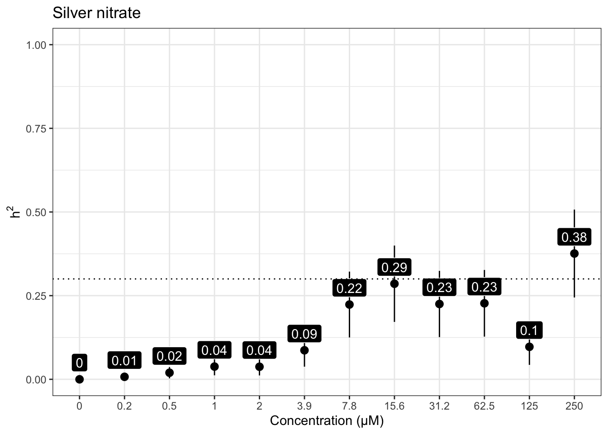
Cadmium dichloride
iteration LogLik wall cpu(sec) restrained
1 -135.021 22:30:13 0 0
2 -132.551 22:30:13 0 0
3 -128.261 22:30:13 0 1
4 -126 22:30:13 0 1
5 -126 22:30:13 0 1
iteration LogLik wall cpu(sec) restrained
1 -122.625 22:30:20 0 0
2 -121.957 22:30:20 0 0
3 -121.51 22:30:21 1 0
4 -121.396 22:30:21 1 0
5 -121.389 22:30:21 1 0
6 -121.389 22:30:21 1 0
iteration LogLik wall cpu(sec) restrained
1 -129.761 22:30:28 0 0
2 -128.465 22:30:28 0 0
3 -127.356 22:30:28 0 0
4 -127.059 22:30:28 0 0
5 -127.05 22:30:28 0 0
6 -127.05 22:30:28 0 0
iteration LogLik wall cpu(sec) restrained
1 -129.434 22:30:36 0 0
2 -127.636 22:30:36 0 0
3 -125.549 22:30:36 0 0
4 -124.527 22:30:36 0 0
5 -124.456 22:30:36 0 0
6 -124.45 22:30:36 0 0
7 -124.45 22:30:36 0 0
iteration LogLik wall cpu(sec) restrained
1 -132.747 22:30:44 0 0
2 -131.487 22:30:44 0 0
3 -130.289 22:30:44 0 0
4 -129.738 22:30:44 0 0
5 -129.643 22:30:44 0 0
6 -129.623 22:30:44 0 0
7 -129.618 22:30:44 0 0
8 -129.617 22:30:44 0 0
9 -129.617 22:30:44 0 0
iteration LogLik wall cpu(sec) restrained
1 -127.604 22:30:51 0 0
2 -126.618 22:30:51 0 0
3 -125.884 22:30:52 1 0
4 -125.704 22:30:52 1 0
5 -125.697 22:30:52 1 0
6 -125.697 22:30:52 1 0
iteration LogLik wall cpu(sec) restrained
1 -121.278 22:30:59 0 0
2 -120.266 22:30:59 0 0
3 -119.429 22:30:59 0 0
4 -119.132 22:30:59 0 0
5 -119.102 22:30:59 0 0
6 -119.099 22:30:59 0 0
7 -119.098 22:30:59 0 0
iteration LogLik wall cpu(sec) restrained
1 -131.964 22:31:7 1 0
2 -129.678 22:31:7 1 0
3 -126.221 22:31:7 1 1
4 -124.5 22:31:7 1 1
5 -124.5 22:31:7 1 1
iteration LogLik wall cpu(sec) restrained
1 -84.926 22:31:14 0 0
2 -84.4145 22:31:14 0 0
3 -84.1854 22:31:14 0 0
4 -84.1697 22:31:14 0 0
5 -84.1696 22:31:14 0 0
iteration LogLik wall cpu(sec) restrained
1 -61.9138 22:31:22 0 0
2 -61.8709 22:31:22 0 0
3 -61.8551 22:31:22 0 0
4 -61.8532 22:31:22 0 0
5 -61.8532 22:31:22 0 0
iteration LogLik wall cpu(sec) restrained
1 -115.676 22:31:30 1 0
2 -114.675 22:31:30 1 0
3 -113.899 22:31:30 1 0
4 -113.673 22:31:30 1 0
5 -113.657 22:31:30 1 0
6 -113.656 22:31:30 1 0
7 -113.656 22:31:30 1 0
iteration LogLik wall cpu(sec) restrained
1 -115.514 22:31:38 0 0
2 -114.319 22:31:38 0 0
3 -113.405 22:31:38 0 0
4 -113.238 22:31:38 0 0
5 -113.238 22:31:38 0 0
 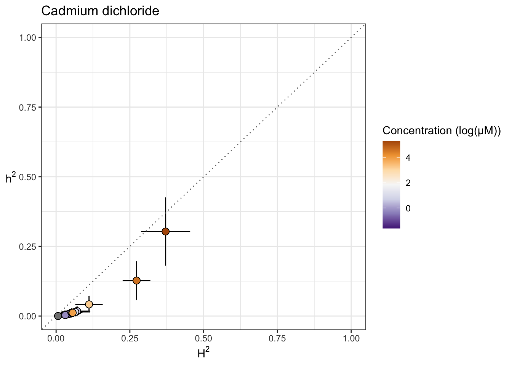
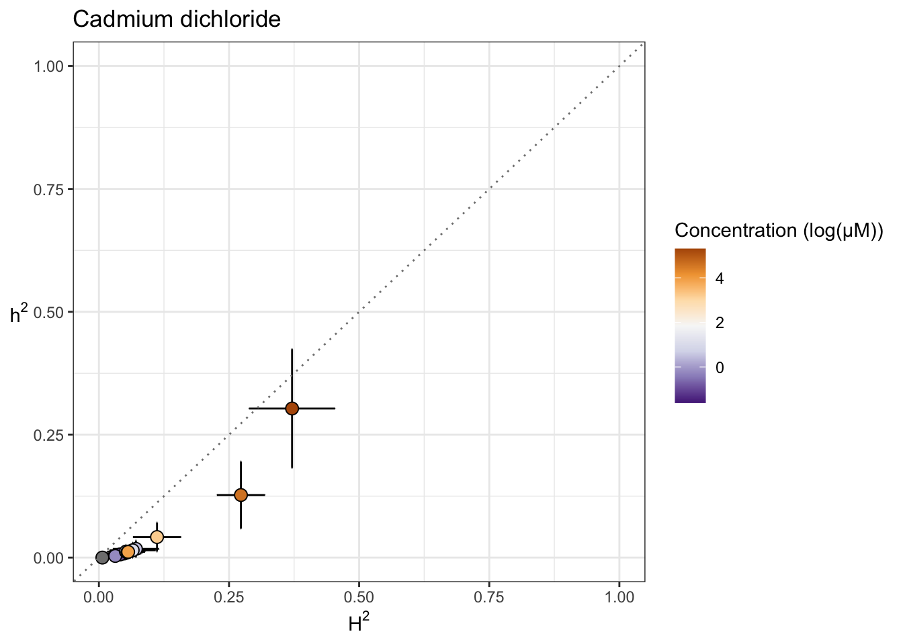
Copper (II) dichloride
iteration LogLik wall cpu(sec) restrained
1 -145.269 22:31:47 0 0
2 -142.801 22:31:47 0 0
3 -138.516 22:31:48 1 1
4 -136 22:31:48 1 1
5 -136 22:31:48 1 1
iteration LogLik wall cpu(sec) restrained
1 -135.019 22:31:55 0 0
2 -133.776 22:31:55 0 0
3 -132.721 22:31:55 0 0
4 -132.464 22:31:55 0 0
5 -132.462 22:31:55 0 0
6 -132.462 22:31:55 0 0
iteration LogLik wall cpu(sec) restrained
1 -139.542 22:32:3 0 0
2 -137.862 22:32:3 0 0
3 -136.217 22:32:3 0 0
4 -135.935 22:32:3 0 0
5 -135.924 22:32:3 0 0
6 -135.923 22:32:3 0 0
iteration LogLik wall cpu(sec) restrained
1 -145.096 22:32:11 1 0
2 -143.122 22:32:11 1 0
3 -140.717 22:32:11 1 0
4 -139.961 22:32:11 1 0
5 -139.935 22:32:11 1 0
6 -139.932 22:32:11 1 0
7 -139.932 22:32:11 1 0
iteration LogLik wall cpu(sec) restrained
1 -139.522 22:32:18 0 0
2 -138.208 22:32:18 0 0
3 -137.076 22:32:19 1 0
4 -136.799 22:32:19 1 0
5 -136.797 22:32:19 1 0
6 -136.797 22:32:19 1 0
iteration LogLik wall cpu(sec) restrained
1 -143.174 22:32:26 0 0
2 -141.387 22:32:26 0 0
3 -139.454 22:32:27 1 0
4 -138.933 22:32:27 1 0
5 -138.93 22:32:27 1 0
6 -138.93 22:32:27 1 0
iteration LogLik wall cpu(sec) restrained
1 -135.701 22:32:34 0 0
2 -134.109 22:32:34 0 0
3 -132.493 22:32:34 0 0
4 -131.998 22:32:34 0 0
5 -131.997 22:32:34 0 0
iteration LogLik wall cpu(sec) restrained
1 -136.257 22:32:42 0 0
2 -134.597 22:32:42 0 0
3 -132.889 22:32:42 0 0
4 -132.371 22:32:42 0 0
5 -132.37 22:32:42 0 0
6 -132.37 22:32:42 0 0
iteration LogLik wall cpu(sec) restrained
1 -131.294 22:32:49 0 0
2 -129.85 22:32:49 0 0
3 -128.536 22:32:49 0 0
4 -128.188 22:32:49 0 0
5 -128.183 22:32:49 0 0
6 -128.183 22:32:49 0 0
iteration LogLik wall cpu(sec) restrained
1 -117.3 22:32:57 0 0
2 -116.893 22:32:57 0 0
3 -116.679 22:32:57 0 0
4 -116.643 22:32:57 0 0
5 -116.642 22:32:57 0 0
iteration LogLik wall cpu(sec) restrained
1 -127.133 22:33:4 0 0
2 -125.786 22:33:4 0 0
3 -124.553 22:33:4 0 0
4 -124.159 22:33:4 0 0
5 -124.145 22:33:4 0 0
6 -124.144 22:33:5 1 0
iteration LogLik wall cpu(sec) restrained
1 -37.0041 22:33:12 0 0
2 -36.6145 22:33:12 0 0
3 -36.4874 22:33:12 0 0
4 -36.4684 22:33:12 0 0
5 -36.4676 22:33:12 0 0
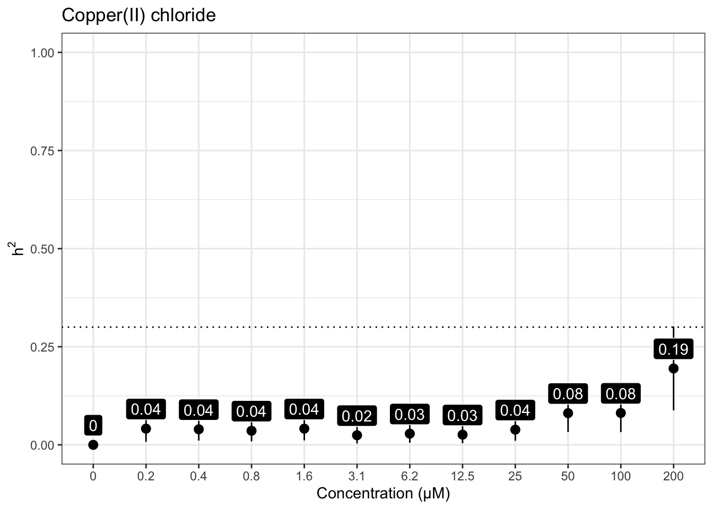
Nickel dichloride
iteration LogLik wall cpu(sec) restrained
1 -141.426 22:33:22 1 0
2 -139.144 22:33:22 1 0
3 -135.533 22:33:22 1 1
4 -133 22:33:22 1 1
5 -133 22:33:22 1 1
iteration LogLik wall cpu(sec) restrained
1 -142.859 22:33:30 1 0
2 -140.683 22:33:30 1 0
3 -137.634 22:33:30 1 1
4 -136.5 22:33:30 1 0
5 -136.403 22:33:30 1 0
6 -136.376 22:33:30 1 0
7 -136.36 22:33:30 1 0
8 -136.355 22:33:30 1 0
9 -136.352 22:33:30 1 0
10 -136.351 22:33:30 1 0
11 -136.35 22:33:30 1 0
iteration LogLik wall cpu(sec) restrained
1 -139.71 22:33:38 0 0
2 -138.154 22:33:38 0 0
3 -136.504 22:33:38 0 0
4 -135.675 22:33:38 0 0
5 -135.531 22:33:38 0 0
6 -135.494 22:33:38 0 0
7 -135.482 22:33:38 0 0
8 -135.477 22:33:38 0 0
9 -135.475 22:33:38 0 0
10 -135.474 22:33:38 0 0
iteration LogLik wall cpu(sec) restrained
1 -137.444 22:33:46 0 0
2 -136.235 22:33:46 0 0
3 -135.051 22:33:46 0 0
4 -134.377 22:33:46 0 0
5 -134.165 22:33:46 0 0
6 -134.079 22:33:46 0 0
7 -134.039 22:33:46 0 0
8 -134.018 22:33:46 0 0
9 -134.006 22:33:46 0 0
10 -134 22:33:46 0 0
11 -133.996 22:33:46 0 0
12 -133.993 22:33:46 0 0
13 -133.992 22:33:46 0 0
14 -133.991 22:33:46 0 0
iteration LogLik wall cpu(sec) restrained
1 -131.731 22:33:54 1 0
2 -130.827 22:33:54 1 0
3 -130.129 22:33:54 1 0
4 -129.911 22:33:54 1 0
5 -129.894 22:33:54 1 0
6 -129.893 22:33:54 1 0
7 -129.893 22:33:54 1 0
iteration LogLik wall cpu(sec) restrained
1 -132.147 22:34:1 0 0
2 -130.945 22:34:1 0 0
3 -129.882 22:34:1 0 0
4 -129.504 22:34:1 0 0
5 -129.474 22:34:1 0 0
6 -129.471 22:34:1 0 0
7 -129.471 22:34:1 0 0
iteration LogLik wall cpu(sec) restrained
1 -127.132 22:34:9 0 0
2 -125.276 22:34:9 0 0
3 -123.122 22:34:9 0 0
4 -122.263 22:34:9 0 0
5 -122.255 22:34:9 0 0
6 -122.255 22:34:9 0 0
iteration LogLik wall cpu(sec) restrained
1 -128.97 22:34:17 0 0
2 -127.988 22:34:17 0 0
3 -127.162 22:34:17 0 0
4 -126.84 22:34:17 0 0
5 -126.798 22:34:17 0 0
6 -126.793 22:34:17 0 0
7 -126.792 22:34:17 0 0
iteration LogLik wall cpu(sec) restrained
1 -127.219 22:34:24 0 0
2 -125.848 22:34:24 0 0
3 -124.628 22:34:25 1 0
4 -124.296 22:34:25 1 0
5 -124.288 22:34:25 1 0
6 -124.288 22:34:25 1 0
iteration LogLik wall cpu(sec) restrained
1 -87.1568 22:34:32 0 0
2 -87.0567 22:34:32 0 0
3 -87.0326 22:34:32 0 0
4 -87.0306 22:34:32 0 0
5 -87.0306 22:34:32 0 0
iteration LogLik wall cpu(sec) restrained
1 -12.9591 22:34:40 0 0
2 -9.79517 22:34:40 0 0
3 -9.50905 22:34:40 0 0
4 -9.49415 22:34:40 0 0
5 -9.49409 22:34:40 0 0
iteration LogLik wall cpu(sec) restrained
1 -137.572 22:34:47 0 0
2 -135.102 22:34:47 0 0
3 -130.814 22:34:47 0 1
4 -128.5 22:34:47 0 1
5 -128.5 22:34:47 0 1
 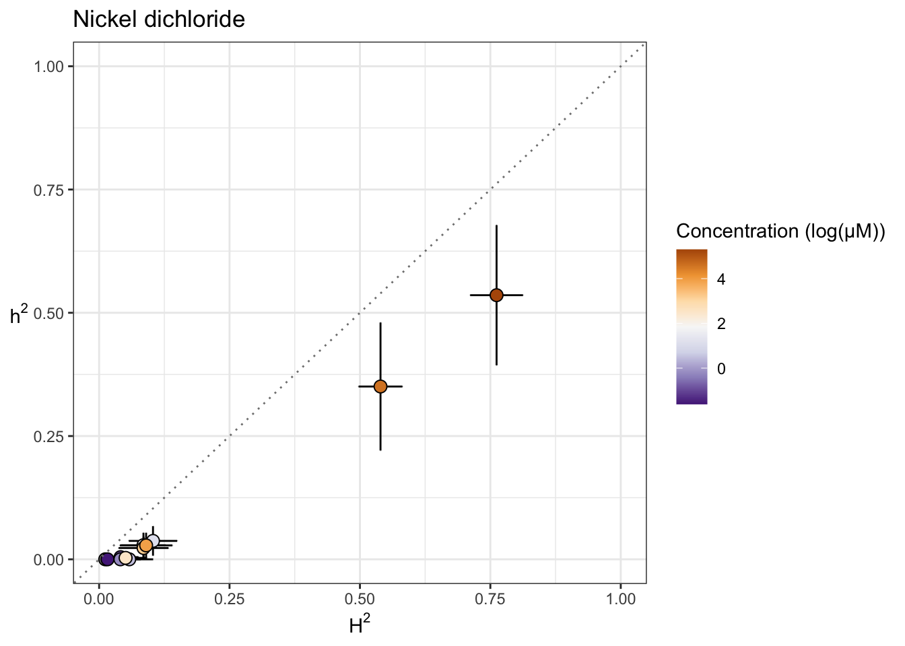
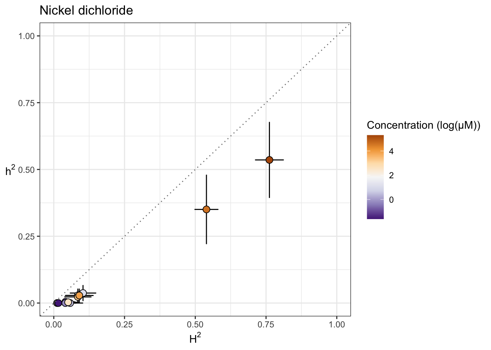
Paraquat
iteration LogLik wall cpu(sec) restrained
1 -100.023 22:34:57 0 0
2 -97.5379 22:34:57 0 0
3 -93.2191 22:34:57 0 1
4 -92 22:34:57 0 1
5 -92 22:34:57 0 1
iteration LogLik wall cpu(sec) restrained
1 -77.2458 22:35:4 0 0
2 -76.9731 22:35:4 0 0
3 -76.8664 22:35:4 0 0
4 -76.8579 22:35:4 0 0
5 -76.8579 22:35:4 0 0
iteration LogLik wall cpu(sec) restrained
1 -88.9169 22:35:12 0 0
2 -88.2786 22:35:12 0 0
3 -87.9496 22:35:12 0 0
4 -87.917 22:35:12 0 0
5 -87.917 22:35:12 0 0
iteration LogLik wall cpu(sec) restrained
1 -88.1173 22:35:19 0 0
2 -87.6924 22:35:19 0 0
3 -87.4323 22:35:19 0 0
4 -87.367 22:35:19 0 0
5 -87.3626 22:35:19 0 0
6 -87.3623 22:35:19 0 0
iteration LogLik wall cpu(sec) restrained
1 -82.2637 22:35:26 0 0
2 -81.8538 22:35:26 0 0
3 -81.6686 22:35:26 0 0
4 -81.6507 22:35:26 0 0
5 -81.6507 22:35:26 0 0
iteration LogLik wall cpu(sec) restrained
1 -33.0182 22:35:33 0 0
2 -30.8305 22:35:33 0 0
3 -30.5748 22:35:33 0 0
4 -30.5599 22:35:33 0 0
5 -30.5598 22:35:33 0 0
iteration LogLik wall cpu(sec) restrained
1 -30.3452 22:35:41 0 0
2 -26.5789 22:35:41 0 0
3 -26.1645 22:35:41 0 0
4 -26.1391 22:35:41 0 0
5 -26.1389 22:35:41 0 0
iteration LogLik wall cpu(sec) restrained
1 -39.7953 22:35:50 0 0
2 -38.0744 22:35:50 0 0
3 -37.8442 22:35:50 0 0
4 -37.8296 22:35:50 0 0
5 -37.8295 22:35:50 0 0
iteration LogLik wall cpu(sec) restrained
1 -49.7775 22:35:57 0 0
2 -48.8335 22:35:57 0 0
3 -48.6604 22:35:57 0 0
4 -48.6464 22:35:57 0 0
5 -48.6462 22:35:57 0 0
iteration LogLik wall cpu(sec) restrained
1 -22.0295 22:36:4 0 0
2 -17.8667 22:36:4 0 0
3 -17.3784 22:36:4 0 0
4 -17.3491 22:36:4 0 0
5 -17.3489 22:36:4 0 0
iteration LogLik wall cpu(sec) restrained
1 -13.2774 22:36:12 0 0
2 -11.9808 22:36:12 0 0
3 -11.4098 22:36:12 0 0
4 -11.3144 22:36:12 0 0
5 -11.3105 22:36:12 0 0
6 -11.3103 22:36:12 0 0
iteration LogLik wall cpu(sec) restrained
1 -10.3527 22:36:18 0 0
2 -2.30451 22:36:18 0 0
3 -1.66587 22:36:18 0 0
4 -1.63054 22:36:19 1 0
5 -1.63025 22:36:19 1 0


Zinc dichloride
iteration LogLik wall cpu(sec) restrained
1 -130.924 22:36:28 0 0
2 -128.451 22:36:28 0 0
3 -124.159 22:36:28 0 1
4 -122 22:36:28 0 1
5 -122 22:36:28 0 1
iteration LogLik wall cpu(sec) restrained
1 -127.608 22:36:36 0 0
2 -125.693 22:36:36 0 0
3 -123.278 22:36:36 0 0
4 -121.65 22:36:36 0 1
5 -121.5 22:36:36 0 1
6 -121.5 22:36:36 0 1
iteration LogLik wall cpu(sec) restrained
1 -127.996 22:36:43 0 0
2 -126.433 22:36:43 0 0
3 -124.659 22:36:43 0 0
4 -123.47 22:36:43 0 0
5 -123.12 22:36:43 0 1
6 -123 22:36:43 0 1
7 -123 22:36:43 0 1
iteration LogLik wall cpu(sec) restrained
1 -129.947 22:36:51 0 0
2 -128.204 22:36:51 0 0
3 -126.207 22:36:51 0 0
4 -125.174 22:36:51 0 0
5 -125.047 22:36:51 0 0
6 -125.018 22:36:51 0 0
7 -125.008 22:36:51 0 0
8 -125.004 22:36:51 0 0
9 -125.002 22:36:51 0 0
10 -125.001 22:36:51 0 0
11 -125 22:36:51 0 0
iteration LogLik wall cpu(sec) restrained
1 -129.073 22:36:59 0 0
2 -127.109 22:36:59 0 0
3 -124.542 22:36:59 0 0
4 -123.002 22:36:59 0 0
5 -123 22:36:59 0 0
6 -123 22:36:59 0 0
iteration LogLik wall cpu(sec) restrained
1 -120.451 22:37:6 0 0
2 -119.342 22:37:6 0 0
3 -118.425 22:37:6 0 0
4 -118.149 22:37:6 0 0
5 -118.135 22:37:6 0 0
6 -118.134 22:37:6 0 0
iteration LogLik wall cpu(sec) restrained
1 -126.019 22:37:14 0 0
2 -124.661 22:37:14 0 0
3 -123.264 22:37:14 0 0
4 -122.501 22:37:14 0 0
5 -122.35 22:37:14 0 0
6 -122.322 22:37:14 0 0
7 -122.316 22:37:14 0 0
8 -122.315 22:37:14 0 0
9 -122.315 22:37:14 0 0
iteration LogLik wall cpu(sec) restrained
1 -121.425 22:37:21 0 0
2 -120.182 22:37:22 1 0
3 -119.149 22:37:22 1 0
4 -118.895 22:37:22 1 0
5 -118.891 22:37:22 1 0
6 -118.891 22:37:22 1 0
iteration LogLik wall cpu(sec) restrained
1 -107.162 22:37:29 0 0
2 -106.85 22:37:29 0 0
3 -106.713 22:37:29 0 0
4 -106.697 22:37:29 0 0
5 -106.697 22:37:29 0 0
iteration LogLik wall cpu(sec) restrained
1 -116.238 22:37:37 0 0
2 -115.293 22:37:37 0 0
3 -114.674 22:37:37 0 0
4 -114.584 22:37:37 0 0
5 -114.584 22:37:37 0 0
iteration LogLik wall cpu(sec) restrained
1 -96.2019 22:37:44 0 0
2 -96.055 22:37:44 0 0
3 -95.9994 22:37:44 0 0
4 -95.9939 22:37:44 0 0
5 -95.9939 22:37:44 0 0
iteration LogLik wall cpu(sec) restrained
1 -102.002 22:37:52 0 0
2 -101.771 22:37:52 0 0
3 -101.655 22:37:52 0 0
4 -101.634 22:37:52 0 0
5 -101.633 22:37:52 0 0


Pyraclostrobin
[1] "Excluding toxin11A: Inconsistent Response"iteration LogLik wall cpu(sec) restrained
1 -61.4455 22:38:2 0 0
2 -58.9236 22:38:2 0 1
3 -55 22:38:2 0 1
4 -55 22:38:2 0 1
iteration LogLik wall cpu(sec) restrained
1 -49.6133 22:38:9 0 0
2 -49.6111 22:38:9 0 0
3 -49.61 22:38:9 0 0
4 -49.6096 22:38:9 0 0
iteration LogLik wall cpu(sec) restrained
1 -45.3698 22:38:17 0 0
2 -45.1188 22:38:17 0 0
3 -45.0167 22:38:17 0 0
4 -45.0069 22:38:17 0 0
5 -45.0069 22:38:17 0 0
iteration LogLik wall cpu(sec) restrained
1 -48.6967 22:38:25 0 0
2 -48.6725 22:38:25 0 0
3 -48.6629 22:38:25 0 0
4 -48.6614 22:38:25 0 0
5 -48.6614 22:38:25 0 0
iteration LogLik wall cpu(sec) restrained
1 -18.8755 22:38:32 0 0
2 -16.2502 22:38:32 0 0
3 -15.9571 22:38:32 0 0
4 -15.9407 22:38:32 0 0
5 -15.9406 22:38:32 0 0
iteration LogLik wall cpu(sec) restrained
1 -13.9413 22:38:39 0 0
2 -8.93128 22:38:39 0 0
3 -8.38579 22:38:39 0 0
4 -8.35288 22:38:39 0 0
5 -8.3526 22:38:39 0 0
iteration LogLik wall cpu(sec) restrained
1 -13.3502 22:38:46 0 0
2 -6.33976 22:38:46 0 0
3 -5.43424 22:38:46 0 0
4 -5.37684 22:38:46 0 0
5 -5.37621 22:38:46 0 0
iteration LogLik wall cpu(sec) restrained
1 -28.3223 22:38:53 0 0
2 -27.4653 22:38:53 0 0
3 -27.1267 22:38:53 0 0
4 -27.0628 22:38:53 0 0
5 -27.0588 22:38:53 0 0
6 -27.0585 22:38:53 0 0
iteration LogLik wall cpu(sec) restrained
1 -38.6734 22:39:0 0 0
2 -38.4568 22:39:0 0 0
3 -38.4019 22:39:0 0 0
4 -38.3964 22:39:0 0 0
5 -38.3963 22:39:0 0 0
iteration LogLik wall cpu(sec) restrained
1 -54.2208 22:39:7 0 0
2 -54.1239 22:39:7 0 0
3 -54.0578 22:39:7 0 0
4 -54.0293 22:39:7 0 0
5 -54.0224 22:39:7 0 0
6 -54.0206 22:39:7 0 0
7 -54.0202 22:39:7 0 0
iteration LogLik wall cpu(sec) restrained
1 -18.2263 22:39:16 0 0
2 -15.5454 22:39:16 0 0
3 -15.2018 22:39:16 0 0
4 -15.1798 22:39:16 0 0
5 -15.1796 22:39:16 0 0


Aldicarb
iteration LogLik wall cpu(sec) restrained
1 -86.0514 22:39:26 0 0
2 -83.5561 22:39:26 0 0
3 -79.2011 22:39:26 0 1
4 -78.5 22:39:26 0 1
5 -78.5 22:39:26 0 1
iteration LogLik wall cpu(sec) restrained
1 -83.5034 22:39:34 0 0
2 -81.7466 22:39:34 0 0
3 -79.5355 22:39:34 0 1
4 -78 22:39:34 0 1
5 -78 22:39:34 0 1
iteration LogLik wall cpu(sec) restrained
1 -81.2421 22:39:41 0 0
2 -80.365 22:39:41 0 0
3 -79.6186 22:39:41 0 0
4 -79.2717 22:39:41 0 0
5 -79.195 22:39:41 0 0
6 -79.1758 22:39:41 0 0
7 -79.1706 22:39:41 0 0
8 -79.1692 22:39:41 0 0
9 -79.1688 22:39:41 0 0
iteration LogLik wall cpu(sec) restrained
1 -80.3186 22:39:49 0 0
2 -78.8592 22:39:49 0 0
3 -77.2447 22:39:49 0 0
4 -76.1714 22:39:49 0 1
5 -76 22:39:49 0 1
6 -76 22:39:49 0 1
iteration LogLik wall cpu(sec) restrained
1 -79.79 22:39:56 0 0
2 -78.7575 22:39:56 0 0
3 -77.7878 22:39:56 0 0
4 -77.2435 22:39:56 0 0
5 -77.0848 22:39:56 0 0
6 -77.0316 22:39:56 0 0
7 -77.0116 22:39:56 0 0
8 -77.0032 22:39:56 0 0
9 -76.9995 22:39:56 0 0
10 -76.9976 22:39:56 0 0
11 -76.9967 22:39:56 0 0
iteration LogLik wall cpu(sec) restrained
1 -80.4644 22:40:3 0 0
2 -79.3779 22:40:3 0 0
3 -78.4134 22:40:3 0 0
4 -77.9791 22:40:3 0 0
5 -77.8936 22:40:3 0 0
6 -77.8729 22:40:3 0 0
7 -77.8674 22:40:3 0 0
8 -77.8658 22:40:3 0 0
9 -77.8653 22:40:3 0 0
iteration LogLik wall cpu(sec) restrained
1 -57.0011 22:40:11 0 0
2 -57.0002 22:40:11 0 0
3 -56.9999 22:40:11 0 0
4 -56.9999 22:40:11 0 0
iteration LogLik wall cpu(sec) restrained
1 -43.1993 22:40:18 0 0
2 -42.7409 22:40:18 0 0
3 -42.6476 22:40:18 0 0
4 -42.6402 22:40:18 0 0
5 -42.6401 22:40:18 0 0
iteration LogLik wall cpu(sec) restrained
1 -40.9944 22:40:25 0 0
2 -40.814 22:40:26 1 0
3 -40.7642 22:40:26 1 0
4 -40.7587 22:40:26 1 0
5 -40.7585 22:40:26 1 0
iteration LogLik wall cpu(sec) restrained
1 -42.0547 22:40:33 0 0
2 -41.2263 22:40:33 0 0
3 -40.6879 22:40:33 0 0
4 -40.581 22:40:33 0 0
5 -40.5777 22:40:33 0 0
6 -40.5776 22:40:33 0 0
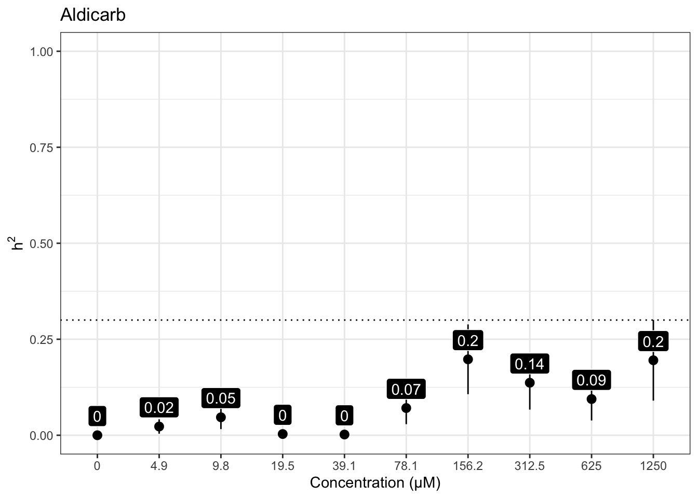
Chlorfenapyr
[1] "Excluding toxin09A, toxin10A, toxin11A, toxin12A: No Response/Variable Dilution"iteration LogLik wall cpu(sec) restrained
1 -379.024 22:40:44 1 0
2 -376.581 22:40:45 2 0
3 -372.343 22:40:46 3 1
4 -366.5 22:40:47 4 1
5 -366.5 22:40:48 5 1
iteration LogLik wall cpu(sec) restrained
1 -89.0217 22:40:56 0 0
2 -87.964 22:40:56 0 0
3 -87.1518 22:40:56 0 0
4 -86.9598 22:40:56 0 0
5 -86.9562 22:40:56 0 0
6 -86.9562 22:40:56 0 0
iteration LogLik wall cpu(sec) restrained
1 -10.7931 22:41:3 0 0
2 -5.49435 22:41:3 0 0
3 -4.95461 22:41:3 0 0
4 -4.92144 22:41:4 1 0
5 -4.92113 22:41:4 1 0
iteration LogLik wall cpu(sec) restrained
1 -68.4115 22:41:11 0 0
2 -68.3085 22:41:11 0 0
3 -68.2802 22:41:11 0 0
4 -68.2772 22:41:11 0 0
5 -68.2771 22:41:11 0 0
iteration LogLik wall cpu(sec) restrained
1 28.7173 22:41:18 0 0
2 36.9636 22:41:18 0 0
3 37.5042 22:41:18 0 0
4 37.5326 22:41:18 0 0
5 37.5327 22:41:18 0 0
iteration LogLik wall cpu(sec) restrained
1 32.3167 22:41:26 0 0
2 62.8712 22:41:26 0 0
3 64.2903 22:41:26 0 0
4 64.3375 22:41:26 0 0
5 64.3377 22:41:26 0 0


Methomyl
iteration LogLik wall cpu(sec) restrained
1 -93.8209 22:41:36 0 0
2 -91.3311 22:41:36 0 0
3 -86.9933 22:41:36 0 1
4 -86 22:41:36 0 1
5 -86 22:41:36 0 1
iteration LogLik wall cpu(sec) restrained
1 -87.7335 22:41:43 0 0
2 -87.0136 22:41:43 0 0
3 -86.4989 22:41:43 0 0
4 -86.3385 22:41:43 0 0
5 -86.3218 22:41:43 0 0
6 -86.3199 22:41:43 0 0
7 -86.3197 22:41:43 0 0
iteration LogLik wall cpu(sec) restrained
1 -85.477 22:41:51 0 0
2 -85.1203 22:41:51 0 0
3 -84.9093 22:41:51 0 0
4 -84.8555 22:41:51 0 0
5 -84.8512 22:41:51 0 0
6 -84.8508 22:41:51 0 0
iteration LogLik wall cpu(sec) restrained
1 -94.3387 22:41:58 0 0
2 -92.9347 22:41:58 0 0
3 -91.517 22:41:58 0 0
4 -90.7675 22:41:58 0 0
5 -90.5853 22:41:58 0 0
6 -90.5276 22:41:58 0 0
7 -90.5081 22:41:58 0 0
8 -90.5017 22:41:58 0 1
9 -90.5 22:41:58 0 1
10 -90.5 22:41:58 0 1
iteration LogLik wall cpu(sec) restrained
1 -92.3137 22:42:6 0 0
2 -90.4527 22:42:6 0 0
3 -88.2909 22:42:6 0 0
4 -87.481 22:42:6 0 0
5 -87.481 22:42:6 0 0
iteration LogLik wall cpu(sec) restrained
1 -91.2807 22:42:13 0 0
2 -90.6992 22:42:13 0 0
3 -90.298 22:42:13 0 0
4 -90.1652 22:42:13 0 0
5 -90.1466 22:42:13 0 0
6 -90.1435 22:42:13 0 0
7 -90.143 22:42:13 0 0
iteration LogLik wall cpu(sec) restrained
1 -82.3486 22:42:21 0 0
2 -82.1135 22:42:21 0 0
3 -81.9908 22:42:21 0 0
4 -81.9646 22:42:21 0 0
5 -81.963 22:42:21 0 0
6 -81.9629 22:42:21 0 0
iteration LogLik wall cpu(sec) restrained
1 -51.3883 22:42:29 0 0
2 -50.1515 22:42:29 0 0
3 -49.9017 22:42:29 0 0
4 -49.8789 22:42:29 0 0
5 -49.8785 22:42:29 0 0
iteration LogLik wall cpu(sec) restrained
1 -42.8454 22:42:37 0 0
2 -42.7153 22:42:37 0 0
3 -42.6794 22:42:37 0 0
4 -42.6754 22:42:37 0 0
5 -42.6754 22:42:37 0 0
iteration LogLik wall cpu(sec) restrained
1 -89.0664 22:42:45 0 0
2 -87.849 22:42:45 0 0
3 -86.8863 22:42:45 0 0
4 -86.6881 22:42:45 0 0
5 -86.6872 22:42:45 0 0


Methylmercury dichloride
iteration LogLik wall cpu(sec) restrained
1 -101.58 22:42:56 0 0
2 -99.0945 22:42:56 0 0
3 -94.7667 22:42:56 0 1
4 -93.5 22:42:56 0 1
5 -93.5 22:42:56 0 1
iteration LogLik wall cpu(sec) restrained
1 -87.3055 22:43:4 0 0
2 -85.8058 22:43:4 0 0
3 -84.0902 22:43:4 0 0
4 -82.9922 22:43:4 0 0
5 -82.9687 22:43:4 0 0
6 -82.9652 22:43:4 0 0
7 -82.9645 22:43:4 0 0
iteration LogLik wall cpu(sec) restrained
1 -85.9328 22:43:11 0 0
2 -84.7136 22:43:11 0 0
3 -83.4277 22:43:11 0 0
4 -82.5009 22:43:11 0 0
5 -82.1014 22:43:12 1 1
6 -82 22:43:12 1 1
7 -82 22:43:12 1 1
iteration LogLik wall cpu(sec) restrained
1 -86.4384 22:43:19 0 0
2 -85.047 22:43:19 0 0
3 -83.6262 22:43:19 0 0
4 -82.9571 22:43:19 0 0
5 -82.8979 22:43:19 0 0
6 -82.8938 22:43:19 0 0
7 -82.8935 22:43:19 0 0
iteration LogLik wall cpu(sec) restrained
1 -92.9672 22:43:27 0 0
2 -92.3989 22:43:27 0 0
3 -91.9441 22:43:27 0 0
4 -91.7161 22:43:27 0 0
5 -91.6457 22:43:27 0 0
6 -91.6193 22:43:27 0 0
7 -91.6083 22:43:27 0 0
8 -91.6033 22:43:27 0 0
9 -91.601 22:43:27 0 0
10 -91.5999 22:43:27 0 0
11 -91.5993 22:43:27 0 0
iteration LogLik wall cpu(sec) restrained
1 -91.3663 22:43:34 0 0
2 -91.0323 22:43:34 0 0
3 -90.8218 22:43:34 0 0
4 -90.7569 22:43:34 0 0
5 -90.7491 22:43:34 0 0
6 -90.7481 22:43:34 0 0
7 -90.7479 22:43:34 0 0
iteration LogLik wall cpu(sec) restrained
1 -83.4705 22:43:42 0 0
2 -82.8541 22:43:42 0 0
3 -82.5067 22:43:42 0 0
4 -82.4572 22:43:42 0 0
5 -82.457 22:43:42 0 0
iteration LogLik wall cpu(sec) restrained
1 -63.004 22:43:50 0 0
2 -62.893 22:43:50 0 0
3 -62.8659 22:43:50 0 0
4 -62.8636 22:43:50 0 0
5 -62.8635 22:43:50 0 0
iteration LogLik wall cpu(sec) restrained
1 -49.2353 22:43:57 0 0
2 -49.2353 22:43:57 0 0
3 -49.2353 22:43:57 0 0
4 -49.2353 22:43:57 0 0
iteration LogLik wall cpu(sec) restrained
1 -17.5226 22:44:4 0 0
2 -17.4779 22:44:4 0 0
3 -17.4643 22:44:4 0 0
4 -17.4632 22:44:4 0 0
5 -17.4632 22:44:4 0 0
 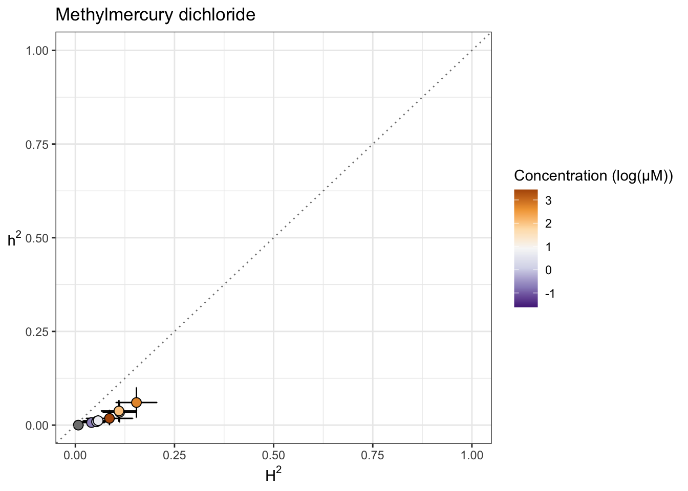
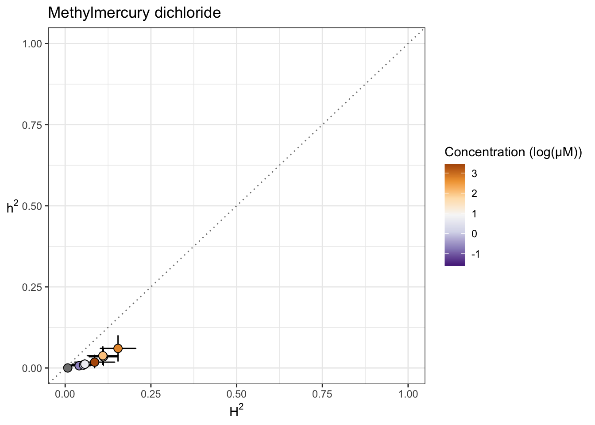
Triphenyl phosphate
iteration LogLik wall cpu(sec) restrained
1 -84.415 22:44:13 0 0
2 -81.9203 22:44:13 0 0
3 -77.5719 22:44:13 0 1
4 -77 22:44:13 0 1
5 -77 22:44:13 0 1
iteration LogLik wall cpu(sec) restrained
1 -75.3449 22:44:21 0 0
2 -75.0575 22:44:21 0 0
3 -74.8863 22:44:21 0 0
4 -74.8387 22:44:21 0 0
5 -74.8338 22:44:21 0 0
6 -74.8333 22:44:21 0 0
iteration LogLik wall cpu(sec) restrained
1 -82.9229 22:44:28 0 0
2 -81.9602 22:44:28 0 0
3 -81.108 22:44:28 0 0
4 -80.6833 22:44:28 0 0
5 -80.5696 22:44:28 0 0
6 -80.5293 22:44:28 0 0
7 -80.5121 22:44:28 0 0
8 -80.5038 22:44:28 0 0
9 -80.4994 22:44:28 0 0
10 -80.4969 22:44:28 0 0
11 -80.4954 22:44:28 0 0
12 -80.4944 22:44:28 0 0
iteration LogLik wall cpu(sec) restrained
1 -74.2542 22:44:36 0 0
2 -74.1888 22:44:36 0 0
3 -74.1604 22:44:36 0 0
4 -74.1556 22:44:36 0 0
5 -74.1554 22:44:36 0 0
iteration LogLik wall cpu(sec) restrained
1 -62.8924 22:44:43 0 0
2 -62.4708 22:44:43 0 0
3 -62.3593 22:44:43 0 0
4 -62.3464 22:44:43 0 0
5 -62.3461 22:44:43 0 0
iteration LogLik wall cpu(sec) restrained
1 -47.9696 22:44:51 0 0
2 -46.9931 22:44:51 0 0
3 -46.798 22:44:51 0 0
4 -46.7806 22:44:51 0 0
5 -46.7804 22:44:51 0 0
iteration LogLik wall cpu(sec) restrained
1 -65.3185 22:44:59 0 0
2 -65.3109 22:44:59 0 0
3 -65.3086 22:44:59 0 0
4 -65.3083 22:44:59 0 0
iteration LogLik wall cpu(sec) restrained
1 -46.789 22:45:6 0 0
2 -46.5845 22:45:6 0 0
3 -46.5438 22:45:6 0 0
4 -46.5411 22:45:6 0 0
5 -46.5411 22:45:6 0 0
iteration LogLik wall cpu(sec) restrained
1 -51.8847 22:45:14 0 0
2 -51.6675 22:45:14 0 0
3 -51.6169 22:45:14 0 0
4 -51.6124 22:45:14 0 0
5 -51.6124 22:45:14 0 0
iteration LogLik wall cpu(sec) restrained
1 -41.449 22:45:22 0 0
2 -40.7605 22:45:22 0 0
3 -40.6303 22:45:22 0 0
4 -40.6205 22:45:22 0 0
5 -40.6204 22:45:22 0 0
iteration LogLik wall cpu(sec) restrained
1 -49.6464 22:45:29 0 0
2 -48.8741 22:45:29 0 0
3 -48.7173 22:45:29 0 0
4 -48.7037 22:45:29 0 0
5 -48.7035 22:45:29 0 0
iteration LogLik wall cpu(sec) restrained
1 -70.7053 22:45:37 0 0
2 -69.8682 22:45:37 0 0
3 -69.1122 22:45:37 0 0
4 -68.734 22:45:37 0 0
5 -68.6605 22:45:37 0 0
6 -68.6474 22:45:37 0 0
7 -68.6452 22:45:37 0 0
8 -68.6448 22:45:37 0 0
 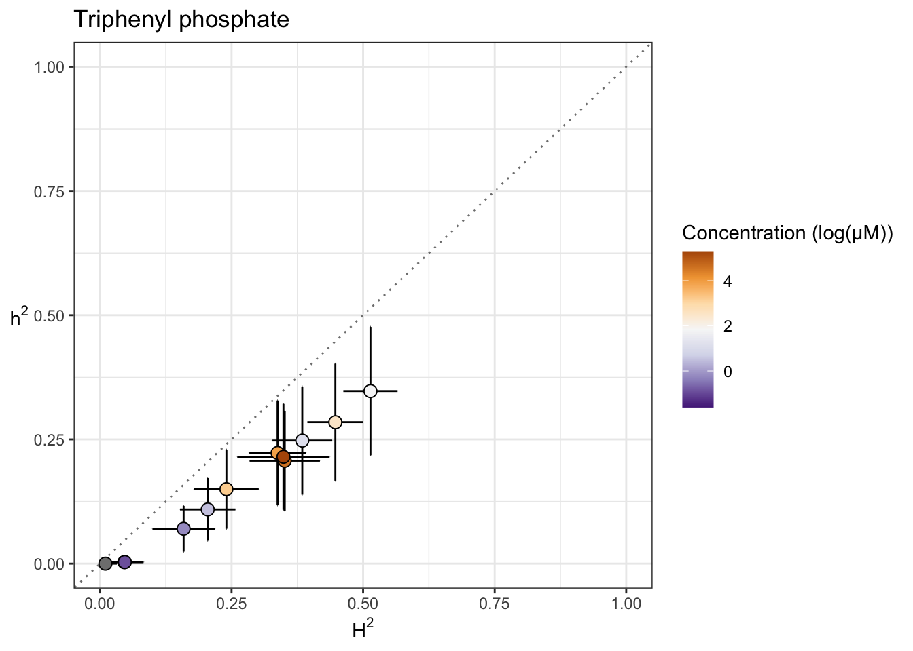
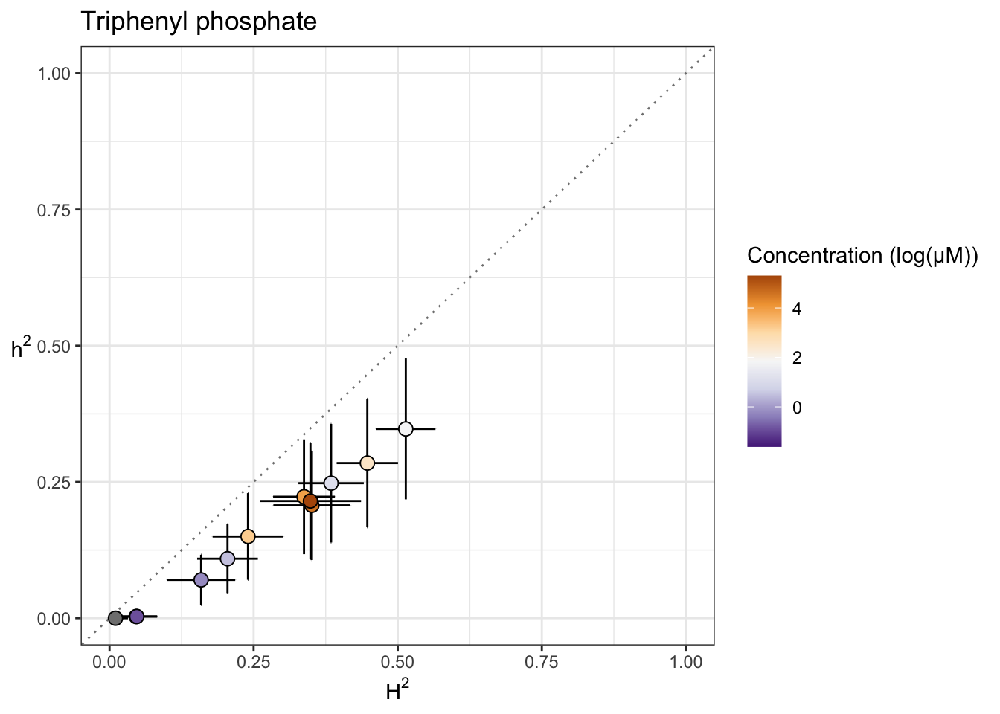
Arsenic trioxide
iteration LogLik wall cpu(sec) restrained
1 -147.328 22:45:47 0 0
2 -144.861 22:45:47 0 0
3 -140.577 22:45:47 0 1
4 -138 22:45:47 0 1
5 -138 22:45:47 0 1
iteration LogLik wall cpu(sec) restrained
1 -115.614 22:45:54 0 0
2 -115.469 22:45:55 1 0
3 -115.41 22:45:55 1 0
4 -115.403 22:45:55 1 0
5 -115.403 22:45:55 1 0
iteration LogLik wall cpu(sec) restrained
1 -115.151 22:46:2 0 0
2 -115.063 22:46:2 0 0
3 -115.031 22:46:2 0 0
4 -115.028 22:46:2 0 0
5 -115.028 22:46:2 0 0
iteration LogLik wall cpu(sec) restrained
1 -119.601 22:46:10 0 0
2 -119.281 22:46:10 0 0
3 -119.127 22:46:10 0 0
4 -119.104 22:46:10 0 0
5 -119.104 22:46:10 0 0
iteration LogLik wall cpu(sec) restrained
1 -128.86 22:46:17 0 0
2 -128.084 22:46:17 0 0
3 -127.578 22:46:17 0 0
4 -127.479 22:46:17 0 0
5 -127.477 22:46:17 0 0
6 -127.477 22:46:18 1 0
iteration LogLik wall cpu(sec) restrained
1 -121.874 22:46:25 0 0
2 -121.559 22:46:25 0 0
3 -121.408 22:46:25 0 0
4 -121.386 22:46:25 0 0
5 -121.385 22:46:25 0 0
iteration LogLik wall cpu(sec) restrained
1 -125.445 22:46:32 0 0
2 -124.777 22:46:32 0 0
3 -124.341 22:46:32 0 0
4 -124.238 22:46:32 0 0
5 -124.232 22:46:33 1 0
6 -124.232 22:46:33 1 0
iteration LogLik wall cpu(sec) restrained
1 -114.631 22:46:40 0 0
2 -114.204 22:46:40 0 0
3 -113.949 22:46:40 0 0
4 -113.886 22:46:40 0 0
5 -113.881 22:46:40 0 0
6 -113.88 22:46:40 0 0
iteration LogLik wall cpu(sec) restrained
1 -86.6924 22:46:47 0 0
2 -86.6845 22:46:47 0 0
3 -86.6816 22:46:47 0 0
4 -86.6812 22:46:47 0 0
iteration LogLik wall cpu(sec) restrained
1 -36.2775 22:46:55 0 0
2 -35.8902 22:46:55 0 0
3 -35.4758 22:46:55 0 0
4 -35.0624 22:46:55 0 0
5 -34.7063 22:46:55 0 1
6 -34.5 22:46:55 0 1
7 -34.5 22:46:55 0 1


Carbaryl
iteration LogLik wall cpu(sec) restrained
1 -146.815 22:47:4 0 0
2 -144.347 22:47:4 0 0
3 -140.064 22:47:4 0 1
4 -137.5 22:47:4 0 1
5 -137.5 22:47:4 0 1
iteration LogLik wall cpu(sec) restrained
1 -128.248 22:47:12 0 0
2 -127.652 22:47:12 0 0
3 -127.28 22:47:12 0 0
4 -127.197 22:47:12 0 0
5 -127.193 22:47:12 0 0
6 -127.193 22:47:12 0 0
iteration LogLik wall cpu(sec) restrained
1 -132.763 22:47:20 0 0
2 -132.322 22:47:20 0 0
3 -132.059 22:47:20 0 0
4 -131.996 22:47:20 0 0
5 -131.992 22:47:20 0 0
6 -131.992 22:47:20 0 0
iteration LogLik wall cpu(sec) restrained
1 -123.817 22:47:28 0 0
2 -123.746 22:47:28 0 0
3 -123.713 22:47:28 0 0
4 -123.707 22:47:28 0 0
5 -123.707 22:47:28 0 0
iteration LogLik wall cpu(sec) restrained
1 -106.799 22:47:36 0 0
2 -106.767 22:47:36 0 0
3 -106.758 22:47:36 0 0
4 -106.757 22:47:36 0 0
5 -106.757 22:47:36 0 0
iteration LogLik wall cpu(sec) restrained
1 -100.438 22:47:44 0 0
2 -100.199 22:47:44 0 0
3 -100.14 22:47:44 0 0
4 -100.135 22:47:44 0 0
5 -100.135 22:47:44 0 0
iteration LogLik wall cpu(sec) restrained
1 -91.1939 22:47:52 0 0
2 -90.9865 22:47:52 0 0
3 -90.9379 22:47:52 0 0
4 -90.9335 22:47:52 0 0
5 -90.9335 22:47:52 0 0
iteration LogLik wall cpu(sec) restrained
1 -102.42 22:48:0 0 0
2 -102.342 22:48:0 0 0
3 -102.321 22:48:0 0 0
4 -102.319 22:48:0 0 0
5 -102.319 22:48:0 0 0
iteration LogLik wall cpu(sec) restrained
1 -88.605 22:48:8 0 0
2 -88.1595 22:48:8 0 0
3 -88.0628 22:48:8 0 0
4 -88.0541 22:48:8 0 0
5 -88.054 22:48:8 0 0
iteration LogLik wall cpu(sec) restrained
1 -84.8058 22:48:16 0 0
2 -84.6912 22:48:16 0 0
3 -84.6613 22:48:16 0 0
4 -84.6584 22:48:16 0 0
5 -84.6584 22:48:16 0 0
iteration LogLik wall cpu(sec) restrained
1 -66.4345 22:48:24 0 0
2 -65.7401 22:48:24 0 0
3 -65.3059 22:48:24 0 0
4 -65.2261 22:48:24 0 0
5 -65.225 22:48:24 0 0
6 -65.225 22:48:24 0 0
iteration LogLik wall cpu(sec) restrained
1 -15.1471 22:48:32 0 0
2 -13.306 22:48:32 0 0
3 -12.7936 22:48:32 0 0
4 -12.7246 22:48:32 0 0
5 -12.7219 22:48:32 0 0
6 -12.7218 22:48:32 0 0


Carboxin
iteration LogLik wall cpu(sec) restrained
1 -137.587 22:48:42 0 0
2 -135.116 22:48:42 0 0
3 -130.828 22:48:42 0 1
4 -128.5 22:48:42 0 1
5 -128.5 22:48:42 0 1
iteration LogLik wall cpu(sec) restrained
1 -136.125 22:48:50 0 0
2 -134.832 22:48:50 0 0
3 -133.714 22:48:50 0 0
4 -133.419 22:48:50 0 0
5 -133.415 22:48:50 0 0
6 -133.415 22:48:50 0 0
iteration LogLik wall cpu(sec) restrained
1 -129.298 22:48:58 0 0
2 -127.966 22:48:58 0 0
3 -126.859 22:48:58 0 0
4 -126.64 22:48:58 0 0
5 -126.64 22:48:58 0 0
iteration LogLik wall cpu(sec) restrained
1 -114.828 22:49:5 0 0
2 -114.816 22:49:6 1 0
3 -114.812 22:49:6 1 0
4 -114.812 22:49:6 1 0
iteration LogLik wall cpu(sec) restrained
1 -103.232 22:49:13 0 0
2 -102.855 22:49:13 0 0
3 -102.757 22:49:13 0 0
4 -102.746 22:49:13 0 0
5 -102.745 22:49:13 0 0
iteration LogLik wall cpu(sec) restrained
1 -106.553 22:49:21 0 0
2 -105.722 22:49:21 0 0
3 -105.127 22:49:21 0 0
4 -104.974 22:49:21 0 0
5 -104.967 22:49:21 0 0
6 -104.967 22:49:21 0 0
iteration LogLik wall cpu(sec) restrained
1 -129.767 22:49:28 0 0
2 -128.584 22:49:28 0 0
3 -127.622 22:49:28 0 0
4 -127.392 22:49:28 0 0
5 -127.389 22:49:28 0 0
6 -127.389 22:49:28 0 0
iteration LogLik wall cpu(sec) restrained
1 -119.262 22:49:36 0 0
2 -119.011 22:49:36 0 0
3 -118.891 22:49:36 0 0
4 -118.872 22:49:36 0 0
5 -118.871 22:49:36 0 0
iteration LogLik wall cpu(sec) restrained
1 -97.2989 22:49:44 1 0
2 -96.8772 22:49:44 1 0
3 -96.7571 22:49:44 1 0
4 -96.7414 22:49:44 1 0
5 -96.7409 22:49:44 1 0
iteration LogLik wall cpu(sec) restrained
1 -90.8248 22:49:51 0 0
2 -90.1053 22:49:51 0 0
3 -89.9251 22:49:51 0 0
4 -89.9042 22:49:51 0 0
5 -89.9037 22:49:51 0 0
iteration LogLik wall cpu(sec) restrained
1 -98.4711 22:49:59 0 0
2 -98.4527 22:49:59 0 0
3 -98.4449 22:49:59 0 0
4 -98.4436 22:49:59 0 0
5 -98.4435 22:49:59 0 0
iteration LogLik wall cpu(sec) restrained
1 -97.6142 22:50:6 0 0
2 -97.1029 22:50:6 0 0
3 -96.7671 22:50:6 0 0
4 -96.6716 22:50:6 0 0
5 -96.6632 22:50:6 0 0
6 -96.6625 22:50:6 0 0


Chlorpyrifos
[1] "Excluding toxin17A: No Response"iteration LogLik wall cpu(sec) restrained
1 -110.882 22:50:16 0 0
2 -108.401 22:50:16 0 0
3 -104.089 22:50:16 0 1
4 -102.5 22:50:16 0 1
5 -102.5 22:50:16 0 1
iteration LogLik wall cpu(sec) restrained
1 -85.0517 22:50:24 0 0
2 -85.0206 22:50:24 0 0
3 -85.0098 22:50:24 0 0
4 -85.0086 22:50:24 0 0
5 -85.0086 22:50:24 0 0
iteration LogLik wall cpu(sec) restrained
1 -81.0478 22:50:31 0 0
2 -81.0213 22:50:31 0 0
3 -81.0133 22:50:31 0 0
4 -81.0124 22:50:31 0 0
iteration LogLik wall cpu(sec) restrained
1 -77.835 22:50:39 0 0
2 -77.7313 22:50:39 0 0
3 -77.7042 22:50:39 0 0
4 -77.7015 22:50:39 0 0
5 -77.7015 22:50:39 0 0
iteration LogLik wall cpu(sec) restrained
1 -72.6289 22:50:47 0 0
2 -72.4247 22:50:47 0 0
3 -72.3741 22:50:47 0 0
4 -72.3692 22:50:47 0 0
5 -72.3691 22:50:47 0 0
iteration LogLik wall cpu(sec) restrained
1 -78.2883 22:50:54 0 0
2 -78.2025 22:50:54 0 0
3 -78.18 22:50:54 0 0
4 -78.1778 22:50:54 0 0
5 -78.1778 22:50:54 0 0
iteration LogLik wall cpu(sec) restrained
1 -71.3274 22:51:1 0 0
2 -71.0089 22:51:1 0 0
3 -70.9358 22:51:1 0 0
4 -70.9291 22:51:1 0 0
5 -70.929 22:51:1 0 0
iteration LogLik wall cpu(sec) restrained
1 -82.3752 22:51:8 0 0
2 -82.2558 22:51:8 0 0
3 -82.2231 22:51:9 1 0
4 -82.2196 22:51:9 1 0
5 -82.2196 22:51:9 1 0
iteration LogLik wall cpu(sec) restrained
1 -69.5285 22:51:16 0 0
2 -69.2055 22:51:16 0 0
3 -69.1267 22:51:16 0 0
4 -69.1189 22:51:16 0 0
5 -69.1187 22:51:16 0 0
iteration LogLik wall cpu(sec) restrained
1 -76.8586 22:51:23 0 0
2 -76.7862 22:51:23 0 0
3 -76.7674 22:51:23 0 0
4 -76.7657 22:51:24 1 0
5 -76.7656 22:51:24 1 0
iteration LogLik wall cpu(sec) restrained
1 -53.8881 22:51:31 0 0
2 -53.2382 22:51:31 0 0
3 -53.0841 22:51:31 0 0
4 -53.0679 22:51:31 0 0
5 -53.0676 22:51:31 0 0


Lead (II) nitrate
iteration LogLik wall cpu(sec) restrained
1 -137.08 22:51:41 0 0
2 -134.609 22:51:41 0 0
3 -130.319 22:51:41 0 1
4 -128 22:51:41 0 1
5 -128 22:51:41 0 1
iteration LogLik wall cpu(sec) restrained
1 -82.4632 22:51:48 0 0
2 -82.3491 22:51:48 0 0
3 -82.3216 22:51:48 0 0
4 -82.3192 22:51:48 0 0
5 -82.3192 22:51:48 0 0
iteration LogLik wall cpu(sec) restrained
1 -85.0933 22:51:56 0 0
2 -85.0319 22:51:56 0 0
3 -85.0166 22:51:56 0 0
4 -85.0153 22:51:56 0 0
5 -85.0153 22:51:56 0 0
iteration LogLik wall cpu(sec) restrained
1 -93.1302 22:52:3 0 0
2 -93.1179 22:52:3 0 0
3 -93.1144 22:52:3 0 0
4 -93.1141 22:52:3 0 0
iteration LogLik wall cpu(sec) restrained
1 -105.834 22:52:11 1 0
2 -105.747 22:52:11 1 0
3 -105.714 22:52:11 1 0
4 -105.711 22:52:11 1 0
5 -105.711 22:52:11 1 0
iteration LogLik wall cpu(sec) restrained
1 -109.743 22:52:18 0 0
2 -109.448 22:52:18 0 0
3 -109.313 22:52:18 0 0
4 -109.296 22:52:18 0 0
5 -109.295 22:52:18 0 0
iteration LogLik wall cpu(sec) restrained
1 -108.702 22:52:26 0 0
2 -108.585 22:52:26 0 0
3 -108.534 22:52:26 0 0
4 -108.526 22:52:26 0 0
5 -108.526 22:52:26 0 0
iteration LogLik wall cpu(sec) restrained
1 -120.167 22:52:33 0 0
2 -118.96 22:52:33 0 0
3 -117.993 22:52:33 0 0
4 -117.778 22:52:33 0 0
5 -117.775 22:52:33 0 0
6 -117.775 22:52:33 0 0
iteration LogLik wall cpu(sec) restrained
1 -79.6568 22:52:41 0 0
2 -78.9345 22:52:41 0 0
3 -78.5546 22:52:41 0 0
4 -78.5209 22:52:41 0 0
5 -78.5208 22:52:41 0 0
iteration LogLik wall cpu(sec) restrained
1 -73.9162 22:52:49 0 0
2 -73.7735 22:52:49 0 0
3 -73.739 22:52:49 0 0
4 -73.7359 22:52:49 0 0
5 -73.7359 22:52:49 0 0
iteration LogLik wall cpu(sec) restrained
1 -74.7312 22:52:57 0 0
2 -74.7257 22:52:57 0 0
3 -74.7241 22:52:57 0 0
4 -74.724 22:52:57 0 0


Atrazine
iteration LogLik wall cpu(sec) restrained
1 -143.23 22:53:7 0 0
2 -140.761 22:53:7 0 0
3 -136.475 22:53:7 0 1
4 -134 22:53:7 0 1
5 -134 22:53:7 0 1
iteration LogLik wall cpu(sec) restrained
1 -137.218 22:53:14 0 0
2 -135.216 22:53:14 0 0
3 -132.641 22:53:14 0 0
4 -131.115 22:53:14 0 1
5 -131 22:53:14 0 1
6 -131 22:53:14 0 1
iteration LogLik wall cpu(sec) restrained
1 -135.464 22:53:21 0 0
2 -134.09 22:53:21 0 0
3 -132.84 22:53:21 0 0
4 -132.455 22:53:21 0 0
5 -132.44 22:53:21 0 0
6 -132.439 22:53:21 0 0
iteration LogLik wall cpu(sec) restrained
1 -142.362 22:53:29 1 0
2 -140.516 22:53:29 1 0
3 -138.369 22:53:29 1 0
4 -137.431 22:53:29 1 0
5 -137.391 22:53:29 1 0
6 -137.387 22:53:29 1 0
7 -137.386 22:53:29 1 0
iteration LogLik wall cpu(sec) restrained
1 -137.476 22:53:36 0 0
2 -135.766 22:53:36 0 0
3 -133.906 22:53:36 0 0
4 -133.162 22:53:36 0 0
5 -133.13 22:53:36 0 0
6 -133.128 22:53:36 0 0
7 -133.128 22:53:36 0 0
iteration LogLik wall cpu(sec) restrained
1 -141.007 22:53:43 0 0
2 -139.009 22:53:43 0 0
3 -136.42 22:53:43 0 0
4 -135.004 22:53:43 0 0
5 -134.989 22:53:43 0 0
6 -134.989 22:53:44 1 0
iteration LogLik wall cpu(sec) restrained
1 -139.68 22:53:50 0 0
2 -137.546 22:53:51 1 0
3 -134.439 22:53:51 1 1
4 -132 22:53:51 1 1
5 -132 22:53:51 1 1
iteration LogLik wall cpu(sec) restrained
1 -131.944 22:53:58 0 0
2 -130.645 22:53:58 0 0
3 -129.459 22:53:58 0 0
4 -129.046 22:53:58 0 0
5 -129.02 22:53:58 0 0
6 -129.019 22:53:58 0 0
7 -129.019 22:53:58 0 0
iteration LogLik wall cpu(sec) restrained
1 -137.864 22:54:6 0 0
2 -136.022 22:54:6 0 0
3 -133.677 22:54:6 0 0
4 -131.781 22:54:6 0 1
5 -131.5 22:54:6 0 1
6 -131.5 22:54:6 0 1
iteration LogLik wall cpu(sec) restrained
1 -115.354 22:54:14 0 0
2 -114.746 22:54:14 0 0
3 -114.372 22:54:14 0 0
4 -114.297 22:54:14 0 0
5 -114.295 22:54:14 0 0
6 -114.295 22:54:14 0 0
iteration LogLik wall cpu(sec) restrained
1 -118.889 22:54:21 0 0
2 -118.477 22:54:21 0 0
3 -118.225 22:54:21 0 0
4 -118.159 22:54:21 0 0
5 -118.153 22:54:21 0 0
6 -118.153 22:54:21 0 0
iteration LogLik wall cpu(sec) restrained
1 -116.397 22:54:28 0 0
2 -115.778 22:54:28 0 0
3 -115.414 22:54:28 0 0
4 -115.352 22:54:28 0 0
5 -115.351 22:54:28 0 0


2,4-D
iteration LogLik wall cpu(sec) restrained
1 -42.6167 22:54:39 0 0
2 -40.4312 22:54:39 0 1
3 -37.5 22:54:39 0 1
4 -37.5 22:54:39 0 1
iteration LogLik wall cpu(sec) restrained
1 -38.9919 22:54:47 0 0
2 -38.7489 22:54:47 0 0
3 -38.613 22:54:47 0 0
4 -38.5791 22:54:47 0 0
5 -38.5762 22:54:47 0 0
6 -38.5759 22:54:47 0 0
iteration LogLik wall cpu(sec) restrained
1 -34.5512 22:54:56 0 0
2 -34.5146 22:54:56 0 0
3 -34.4998 22:54:56 0 0
4 -34.4969 22:54:56 0 0
5 -34.4968 22:54:56 0 0
iteration LogLik wall cpu(sec) restrained
1 -38.9853 22:55:4 0 0
2 -38.6844 22:55:4 0 0
3 -38.5204 22:55:4 0 0
4 -38.4852 22:55:4 0 0
5 -38.4832 22:55:4 0 0
6 -38.483 22:55:4 0 0
iteration LogLik wall cpu(sec) restrained
1 -31.2493 22:55:11 0 0
2 -31.189 22:55:11 0 0
3 -31.1717 22:55:11 0 0
4 -31.1698 22:55:11 0 0
5 -31.1697 22:55:11 0 0
iteration LogLik wall cpu(sec) restrained
1 -36.6969 22:55:18 0 0
2 -36.6924 22:55:18 0 0
3 -36.6904 22:55:18 0 0
4 -36.6899 22:55:18 0 0
iteration LogLik wall cpu(sec) restrained
1 -35.3172 22:55:26 0 0
2 -35.1679 22:55:26 0 0
3 -35.1087 22:55:26 0 0
4 -35.1021 22:55:26 0 0
5 -35.102 22:55:26 0 0
iteration LogLik wall cpu(sec) restrained
1 -24.6092 22:55:32 0 0
2 -23.724 22:55:32 0 0
3 -23.5052 22:55:32 0 0
4 -23.481 22:55:32 0 0
5 -23.4804 22:55:32 0 0
iteration LogLik wall cpu(sec) restrained
1 -28.6797 22:55:39 0 0
2 -28.3567 22:55:39 0 0
3 -28.2618 22:55:39 0 0
4 -28.2494 22:55:39 0 0
5 -28.249 22:55:39 0 0
iteration LogLik wall cpu(sec) restrained
1 -25.9957 22:55:46 0 0
2 -25.3367 22:55:46 0 0
3 -25.1916 22:55:46 0 0
4 -25.178 22:55:46 0 0
5 -25.1778 22:55:46 0 0
iteration LogLik wall cpu(sec) restrained
1 -29.7138 22:55:53 0 0
2 -29.4656 22:55:53 0 0
3 -29.3966 22:55:53 0 0
4 -29.3885 22:55:53 0 0
5 -29.3883 22:55:53 0 0
iteration LogLik wall cpu(sec) restrained
1 -25.0597 22:56:0 0 0
2 -24.4153 22:56:0 0 0
3 -24.2775 22:56:0 0 0
4 -24.2652 22:56:0 0 0
5 -24.265 22:56:0 0 0
| Version | Author | Date |
|---|---|---|
| 0e83f2b | sam-widmayer | 2021-03-24 |


Malathion
iteration LogLik wall cpu(sec) restrained
1 -40.9704 22:56:10 0 0
2 -38.7741 22:56:10 0 1
3 -36 22:56:10 0 1
4 -36 22:56:10 0 1
iteration LogLik wall cpu(sec) restrained
1 -30.4071 22:56:16 0 0
2 -30.3936 22:56:16 0 0
3 -30.39 22:56:16 0 0
4 -30.3898 22:56:16 0 0
iteration LogLik wall cpu(sec) restrained
1 -14.6269 22:56:23 0 0
2 -13.6811 22:56:23 0 0
3 -13.55 22:56:23 0 0
4 -13.5425 22:56:23 0 0
5 -13.5424 22:56:23 0 0
iteration LogLik wall cpu(sec) restrained
1 -11.8122 22:56:29 0 0
2 -10.6983 22:56:29 0 0
3 -10.574 22:56:29 0 0
4 -10.5684 22:56:29 0 0
5 -10.5684 22:56:29 0 0
iteration LogLik wall cpu(sec) restrained
1 -23.1522 22:56:36 0 0
2 -23.1154 22:56:36 0 0
3 -23.1087 22:56:36 0 0
4 -23.1084 22:56:36 0 0
iteration LogLik wall cpu(sec) restrained
1 -11.2511 22:56:42 0 0
2 -10.0628 22:56:42 0 0
3 -9.93708 22:56:42 0 0
4 -9.93184 22:56:42 0 0
5 -9.93183 22:56:42 0 0
iteration LogLik wall cpu(sec) restrained
1 -16.4092 22:56:48 0 0
2 -15.94 22:56:48 0 0
3 -15.8775 22:56:48 0 0
4 -15.8749 22:56:48 0 0
5 -15.8749 22:56:48 0 0
iteration LogLik wall cpu(sec) restrained
1 -16.012 22:56:54 0 0
2 -15.4584 22:56:54 0 0
3 -15.3835 22:56:54 0 0
4 -15.3802 22:56:54 0 0
5 -15.3802 22:56:54 0 0
iteration LogLik wall cpu(sec) restrained
1 -9.57973 22:57:1 0 0
2 -7.91037 22:57:1 0 0
3 -7.72167 22:57:1 0 0
4 -7.71225 22:57:1 0 0
5 -7.71222 22:57:1 0 0
iteration LogLik wall cpu(sec) restrained
1 -17.5345 22:57:8 0 0
2 -17.2619 22:57:8 0 0
3 -17.2167 22:57:8 0 0
4 -17.2145 22:57:8 0 0
5 -17.2145 22:57:8 0 0
iteration LogLik wall cpu(sec) restrained
1 -20.2646 22:57:16 0 0
2 -19.8178 22:57:16 0 0
3 -19.7433 22:57:16 0 0
4 -19.7388 22:57:16 0 0
5 -19.7388 22:57:16 0 0
iteration LogLik wall cpu(sec) restrained
1 -11.4459 22:57:23 0 0
2 -8.57971 22:57:23 0 0
3 -8.19282 22:57:23 0 0
4 -8.16701 22:57:23 0 0
5 -8.16676 22:57:23 0 0
| Version | Author | Date |
|---|---|---|
| 0e83f2b | sam-widmayer | 2021-03-24 |


Chlorothalonil
iteration LogLik wall cpu(sec) restrained
1 -44.733 22:57:32 0 0
2 -42.5505 22:57:32 0 1
3 -39.5 22:57:32 0 1
4 -39.5 22:57:32 0 1
iteration LogLik wall cpu(sec) restrained
1 -36.6463 22:57:39 0 0
2 -36.1532 22:57:39 0 0
3 -35.8595 22:57:39 0 0
4 -35.7944 22:57:39 0 0
5 -35.7906 22:57:39 0 0
6 -35.7903 22:57:39 0 0
iteration LogLik wall cpu(sec) restrained
1 -37.8987 22:57:46 0 0
2 -37.5172 22:57:46 0 0
3 -37.2862 22:57:46 0 0
4 -37.2286 22:57:46 0 0
5 -37.2246 22:57:46 0 0
6 -37.2243 22:57:46 0 0
iteration LogLik wall cpu(sec) restrained
1 -39.1277 22:57:55 0 0
2 -38.1578 22:57:55 0 0
3 -37.4445 22:57:55 0 0
4 -37.2931 22:57:55 0 0
5 -37.2901 22:57:55 0 0
6 -37.2901 22:57:55 0 0
iteration LogLik wall cpu(sec) restrained
1 -40.3873 22:58:2 0 0
2 -39.5361 22:58:2 0 0
3 -38.9327 22:58:2 0 0
4 -38.7901 22:58:2 0 0
5 -38.7823 22:58:2 0 0
6 -38.7817 22:58:2 0 0
iteration LogLik wall cpu(sec) restrained
1 -35.9808 22:58:11 0 0
2 -35.7047 22:58:11 0 0
3 -35.5846 22:58:11 0 0
4 -35.571 22:58:11 0 0
5 -35.571 22:58:11 0 0
iteration LogLik wall cpu(sec) restrained
1 -35.5319 22:58:22 0 0
2 -35.3726 22:58:22 0 0
3 -35.3043 22:58:22 0 0
4 -35.2949 22:58:22 0 0
5 -35.2948 22:58:22 0 0
iteration LogLik wall cpu(sec) restrained
1 -36.9568 22:58:30 0 0
2 -36.7039 22:58:30 0 0
3 -36.573 22:58:30 0 0
4 -36.5475 22:58:30 0 0
5 -36.5464 22:58:30 0 0
6 -36.5464 22:58:30 0 0
iteration LogLik wall cpu(sec) restrained
1 -33.5372 22:58:38 0 0
2 -33.4909 22:58:38 0 0
3 -33.4649 22:58:38 0 0
4 -33.4571 22:58:38 0 0
5 -33.4562 22:58:38 0 0
iteration LogLik wall cpu(sec) restrained
1 -34.414 22:58:46 0 0
2 -34.4108 22:58:46 0 0
3 -34.4096 22:58:46 0 0
4 -34.4094 22:58:46 0 0
iteration LogLik wall cpu(sec) restrained
1 -27.5119 22:58:53 0 0
2 -27.2802 22:58:53 0 0
3 -27.2116 22:58:53 0 0
4 -27.2027 22:58:53 0 0
5 -27.2025 22:58:53 0 0
iteration LogLik wall cpu(sec) restrained
1 -35.09 22:59:0 0 0
2 -35.0405 22:59:0 0 0
3 -35.0172 22:59:0 0 0
4 -35.0123 22:59:0 0 0
5 -35.012 22:59:0 0 0
| Version | Author | Date |
|---|---|---|
| 0e83f2b | sam-widmayer | 2021-03-24 |


Deltamethrin
iteration LogLik wall cpu(sec) restrained
1 -43.1443 22:59:10 0 0
2 -40.9617 22:59:10 0 1
3 -38 22:59:10 0 1
4 -38 22:59:10 0 1
iteration LogLik wall cpu(sec) restrained
1 -42.4597 22:59:16 0 0
2 -41.1259 22:59:16 0 0
3 -39.8126 22:59:16 0 1
4 -39.5 22:59:16 0 0
5 -39.4978 22:59:16 0 0
6 -39.4977 22:59:16 0 0
iteration LogLik wall cpu(sec) restrained
1 -38.6847 22:59:23 0 0
2 -37.9563 22:59:23 0 0
3 -37.5723 22:59:23 0 0
4 -37.5513 22:59:23 0 0
5 -37.5507 22:59:23 0 0
iteration LogLik wall cpu(sec) restrained
1 -32.4077 22:59:29 0 0
2 -32.4011 22:59:29 0 0
3 -32.3987 22:59:29 0 0
4 -32.3984 22:59:29 0 0
iteration LogLik wall cpu(sec) restrained
1 -35.4808 22:59:35 0 0
2 -35.3024 22:59:35 0 0
3 -35.2349 22:59:35 0 0
4 -35.229 22:59:35 0 0
5 -35.229 22:59:35 0 0
iteration LogLik wall cpu(sec) restrained
1 -33.435 22:59:41 0 0
2 -33.3637 22:59:41 0 0
3 -33.3388 22:59:41 0 0
4 -33.3363 22:59:41 0 0
5 -33.3363 22:59:41 0 0
iteration LogLik wall cpu(sec) restrained
1 -40.1024 22:59:48 0 0
2 -39.3535 22:59:48 0 0
3 -38.8734 22:59:48 0 0
4 -38.7912 22:59:48 0 0
5 -38.7902 22:59:48 0 0
6 -38.7902 22:59:48 0 0
iteration LogLik wall cpu(sec) restrained
1 -32.1522 22:59:55 0 0
2 -32.1371 22:59:55 0 0
3 -32.1319 22:59:55 0 0
4 -32.1314 22:59:55 0 0
iteration LogLik wall cpu(sec) restrained
1 -40.8373 23:0:1 0 0
2 -39.8313 23:0:1 0 0
3 -39.1576 23:0:1 0 0
4 -39.0719 23:0:1 0 0
5 -39.0718 23:0:1 0 0
iteration LogLik wall cpu(sec) restrained
1 -36.3222 23:0:7 0 0
2 -36.0759 23:0:7 0 0
3 -35.9738 23:0:7 0 0
4 -35.9633 23:0:7 0 0
5 -35.9632 23:0:7 0 0
iteration LogLik wall cpu(sec) restrained
1 -28.8568 23:0:13 0 0
2 -28.8553 23:0:14 1 0
3 -28.8549 23:0:14 1 0
4 -28.8549 23:0:14 1 0
iteration LogLik wall cpu(sec) restrained
1 -30.7533 23:0:20 0 0
2 -30.6364 23:0:20 0 0
3 -30.5845 23:0:20 0 0
4 -30.5761 23:0:20 0 0
5 -30.5758 23:0:20 0 0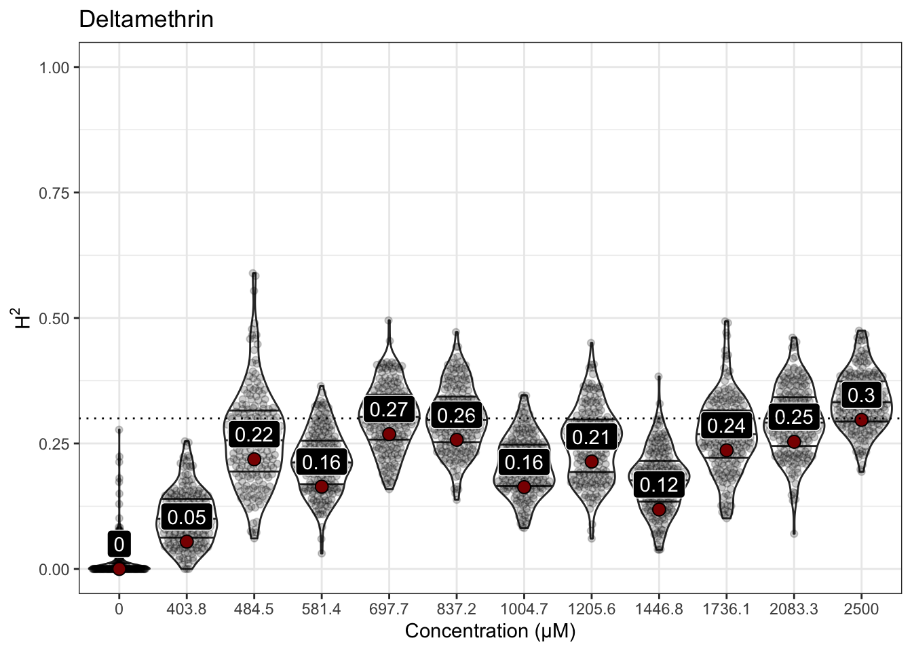
| Version | Author | Date |
|---|---|---|
| 0e83f2b | sam-widmayer | 2021-03-24 |


Manganese dichloride
iteration LogLik wall cpu(sec) restrained
1 -42.6079 23:0:28 0 0
2 -40.42 23:0:28 0 1
3 -37.5 23:0:28 0 1
4 -37.5 23:0:28 0 1
iteration LogLik wall cpu(sec) restrained
1 -38.8886 23:0:34 0 0
2 -38.1796 23:0:34 0 0
3 -37.6956 23:0:34 0 0
4 -37.5798 23:0:34 0 0
5 -37.5741 23:0:34 0 0
6 -37.5738 23:0:34 0 0
iteration LogLik wall cpu(sec) restrained
1 -36.9348 23:0:41 0 0
2 -36.6895 23:0:41 0 0
3 -36.5719 23:0:41 0 0
4 -36.5523 23:0:41 0 0
5 -36.5516 23:0:41 0 0
iteration LogLik wall cpu(sec) restrained
1 -38.1773 23:0:47 0 0
2 -37.7824 23:0:47 0 0
3 -37.5088 23:0:47 0 0
4 -37.4102 23:0:47 0 0
5 -37.3948 23:0:47 0 0
6 -37.3922 23:0:47 0 0
7 -37.3918 23:0:47 0 0
iteration LogLik wall cpu(sec) restrained
1 -38.8315 23:0:53 0 0
2 -38.4954 23:0:53 0 0
3 -38.3388 23:0:53 0 0
4 -38.3187 23:0:53 0 0
5 -38.3184 23:0:53 0 0
iteration LogLik wall cpu(sec) restrained
1 -40.3377 23:1:0 0 0
2 -39.6666 23:1:0 0 0
3 -39.2298 23:1:0 0 0
4 -39.1245 23:1:0 0 0
5 -39.1167 23:1:0 0 0
6 -39.116 23:1:0 0 0
iteration LogLik wall cpu(sec) restrained
1 -40.6577 23:1:6 0 0
2 -39.389 23:1:6 0 0
3 -38.2191 23:1:6 0 0
4 -37.9807 23:1:6 0 0
5 -37.9772 23:1:6 0 0
6 -37.9771 23:1:6 0 0
iteration LogLik wall cpu(sec) restrained
1 -37.7777 23:1:12 0 0
2 -37.6326 23:1:12 0 0
3 -37.5494 23:1:12 0 0
4 -37.5257 23:1:12 0 0
5 -37.523 23:1:12 0 0
6 -37.5226 23:1:12 0 0
iteration LogLik wall cpu(sec) restrained
1 -36.8777 23:1:19 0 0
2 -36.2709 23:1:19 0 0
3 -35.9369 23:1:19 0 0
4 -35.8931 23:1:19 0 0
5 -35.8929 23:1:19 0 0
iteration LogLik wall cpu(sec) restrained
1 -37.7194 23:1:25 0 0
2 -37.2268 23:1:25 0 0
3 -36.8332 23:1:25 0 0
4 -36.6306 23:1:25 0 0
5 -36.5629 23:1:25 0 0
6 -36.5341 23:1:25 0 0
7 -36.5198 23:1:25 0 0
8 -36.512 23:1:25 0 0
9 -36.5074 23:1:25 0 0
10 -36.5046 23:1:25 0 0
11 -36.5027 23:1:25 0 0
12 -36.5015 23:1:25 0 0
13 -36.5007 23:1:25 0 0
iteration LogLik wall cpu(sec) restrained
1 -34.2131 23:1:32 0 0
2 -34.178 23:1:32 0 0
3 -34.1593 23:1:32 0 0
4 -34.1541 23:1:32 0 0
5 -34.1535 23:1:32 0 0
iteration LogLik wall cpu(sec) restrained
1 -25.7003 23:1:38 0 0
2 -25.608 23:1:38 0 0
3 -25.5792 23:1:38 0 0
4 -25.5754 23:1:38 0 0
5 -25.5753 23:1:38 0 0
| Version | Author | Date |
|---|---|---|
| 0e83f2b | sam-widmayer | 2021-03-24 |


Propoxur
iteration LogLik wall cpu(sec) restrained
1 -42.5851 23:1:47 0 0
2 -40.3949 23:1:47 0 1
3 -37.5 23:1:47 0 1
4 -37.5 23:1:47 0 1
iteration LogLik wall cpu(sec) restrained
1 -36.4995 23:1:54 0 0
2 -36.2587 23:1:54 0 0
3 -36.1235 23:1:54 0 0
4 -36.0911 23:1:54 0 0
5 -36.0888 23:1:54 0 0
6 -36.0887 23:1:54 0 0
iteration LogLik wall cpu(sec) restrained
1 -26.1339 23:2:0 0 0
2 -25.4177 23:2:0 0 0
3 -25.2266 23:2:0 0 0
4 -25.2037 23:2:0 0 0
5 -25.203 23:2:0 0 0
iteration LogLik wall cpu(sec) restrained
1 -34.8658 23:2:7 0 0
2 -34.6593 23:2:7 0 0
3 -34.5544 23:2:7 0 0
4 -34.534 23:2:7 0 0
5 -34.5331 23:2:7 0 0
iteration LogLik wall cpu(sec) restrained
1 -38.5938 23:2:13 0 0
2 -38.1141 23:2:13 0 0
3 -37.719 23:2:13 0 0
4 -37.5158 23:2:13 0 0
5 -37.4577 23:2:13 0 0
6 -37.4392 23:2:13 0 0
7 -37.4328 23:2:13 0 0
8 -37.4305 23:2:13 0 0
9 -37.4296 23:2:13 0 0
iteration LogLik wall cpu(sec) restrained
1 -27.226 23:2:19 0 0
2 -26.5401 23:2:19 0 0
3 -26.2694 23:2:19 0 0
4 -26.2176 23:2:19 0 0
5 -26.2142 23:2:19 0 0
6 -26.214 23:2:19 0 0
iteration LogLik wall cpu(sec) restrained
1 -25.7257 23:2:26 0 0
2 -25.2521 23:2:26 0 0
3 -24.8325 23:2:26 0 0
4 -24.5963 23:2:26 0 0
5 -24.5289 23:2:26 0 0
6 -24.5089 23:2:26 0 0
7 -24.5026 23:2:26 0 0
8 -24.5006 23:2:26 0 1
9 -24.5 23:2:26 0 1
iteration LogLik wall cpu(sec) restrained
1 -19.9539 23:2:33 0 0
2 -19.4427 23:2:33 0 0
3 -19.1837 23:2:33 0 0
4 -19.1607 23:2:33 0 0
5 -19.1607 23:2:33 0 0
iteration LogLik wall cpu(sec) restrained
1 -23.4591 23:2:39 0 0
2 -23.4554 23:2:39 0 0
3 -23.4533 23:2:39 0 0
4 -23.4526 23:2:39 0 0
iteration LogLik wall cpu(sec) restrained
1 -25.2854 23:2:45 0 0
2 -25.054 23:2:45 0 0
3 -24.9032 23:2:45 0 0
4 -24.8571 23:2:45 0 0
5 -24.8531 23:2:45 0 0
6 -24.8529 23:2:45 0 0
iteration LogLik wall cpu(sec) restrained
1 -29.2784 23:2:52 0 0
2 -29.148 23:2:52 0 0
3 -29.0792 23:2:52 0 0
4 -29.0587 23:2:52 0 0
5 -29.056 23:2:52 0 0
6 -29.0557 23:2:52 0 0
| Version | Author | Date |
|---|---|---|
| 0e83f2b | sam-widmayer | 2021-03-24 |

sessionInfo()R version 4.0.4 (2021-02-15)
Platform: x86_64-apple-darwin17.0 (64-bit)
Running under: macOS Catalina 10.15.7
Matrix products: default
BLAS: /Library/Frameworks/R.framework/Versions/4.0/Resources/lib/libRblas.dylib
LAPACK: /Library/Frameworks/R.framework/Versions/4.0/Resources/lib/libRlapack.dylib
locale:
[1] en_US.UTF-8/en_US.UTF-8/en_US.UTF-8/C/en_US.UTF-8/en_US.UTF-8
attached base packages:
[1] stats graphics grDevices utils datasets methods base
other attached packages:
[1] RColorBrewer_1.1-2 sommer_4.1.2 crayon_1.4.1
[4] lattice_0.20-41 Matrix_1.3-2 ggrepel_0.9.1
[7] ggbeeswarm_0.6.0 nationalparkcolors_0.1.0 ddpcr_1.15
[10] kableExtra_1.3.4 knitr_1.31 drc_3.0-1
[13] MASS_7.3-53 easyXpress_0.1.0 forcats_0.5.1
[16] stringr_1.4.0 dplyr_1.0.4 purrr_0.3.4
[19] readr_1.4.0 tidyr_1.1.2 tibble_3.1.0
[22] ggplot2_3.3.3 tidyverse_1.3.0 workflowr_1.6.2
loaded via a namespace (and not attached):
[1] minqa_1.2.4 TH.data_1.0-10 colorspace_2.0-0
[4] ellipsis_0.3.1 rio_0.5.16 rprojroot_2.0.2
[7] fs_1.5.0 rstudioapi_0.13 farver_2.0.3
[10] fansi_0.4.2 mvtnorm_1.1-1 lubridate_1.7.9.2
[13] xml2_1.3.2 codetools_0.2-18 splines_4.0.4
[16] readbitmap_0.1.5 jsonlite_1.7.2 nloptr_1.2.2.2
[19] broom_0.7.5 dbplyr_2.1.0 png_0.1-7
[22] compiler_4.0.4 httr_1.4.2 backports_1.2.1
[25] assertthat_0.2.1 bmp_0.3 cli_2.3.1
[28] later_1.1.0.1 htmltools_0.5.1.1 tools_4.0.4
[31] igraph_1.2.6 gtable_0.3.0 glue_1.4.2
[34] rebus.base_0.0-3 Rcpp_1.0.6 carData_3.0-4
[37] cellranger_1.1.0 jquerylib_0.1.3 vctrs_0.3.6
[40] nlme_3.1-152 svglite_2.0.0 xfun_0.21
[43] rebus.datetimes_0.0-1 lme4_1.1-26 openxlsx_4.2.3
[46] rvest_0.3.6 lifecycle_1.0.0 rebus.numbers_0.0-1
[49] gtools_3.8.2 statmod_1.4.35 zoo_1.8-8
[52] scales_1.1.1 hms_1.0.0 promises_1.2.0.1
[55] sandwich_3.0-0 yaml_2.2.1 curl_4.3
[58] sass_0.3.1 stringi_1.5.3 imager_0.42.7
[61] highr_0.8 plotrix_3.8-1 tiff_0.1-6
[64] boot_1.3-26 zip_2.1.1 rlang_0.4.10
[67] pkgconfig_2.0.3 systemfonts_1.0.1 evaluate_0.14
[70] labeling_0.4.2 cowplot_1.1.1 tidyselect_1.1.0
[73] magrittr_2.0.1 R6_2.5.0 generics_0.1.0
[76] multcomp_1.4-16 DBI_1.1.1 pillar_1.5.0
[79] haven_2.3.1 whisker_0.4 foreign_0.8-81
[82] withr_2.4.1 rebus_0.1-3 survival_3.2-7
[85] abind_1.4-5 rebus.unicode_0.0-2 modelr_0.1.8
[88] car_3.0-10 utf8_1.1.4 rmarkdown_2.7
[91] jpeg_0.1-8.1 grid_4.0.4 readxl_1.3.1
[94] data.table_1.14.0 git2r_0.28.0 reprex_1.0.0
[97] digest_0.6.27 webshot_0.5.2 httpuv_1.5.5
[100] munsell_0.5.0 beeswarm_0.2.3 viridisLite_0.3.0
[103] vipor_0.4.5 bslib_0.2.4